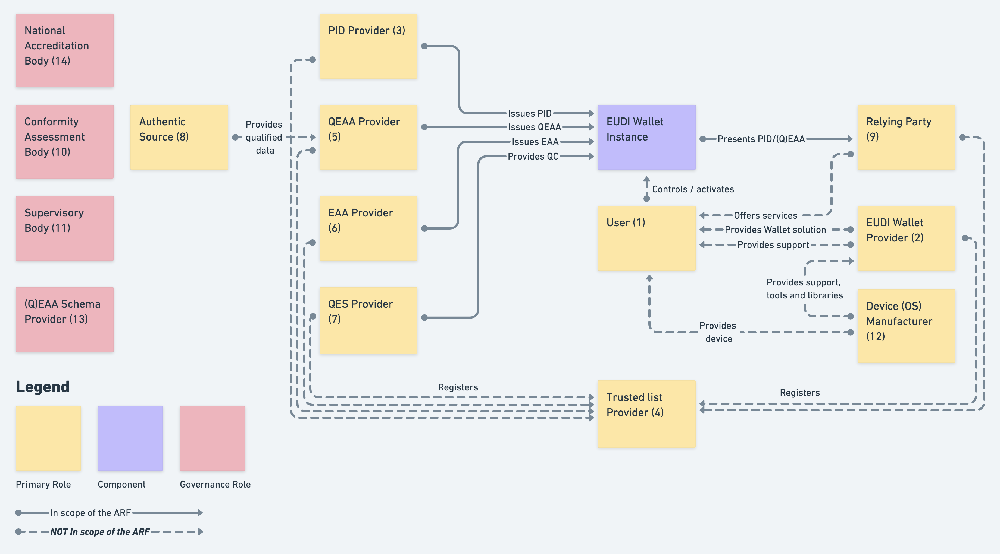
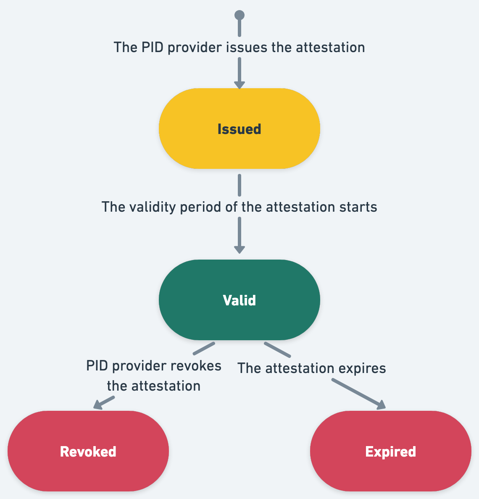
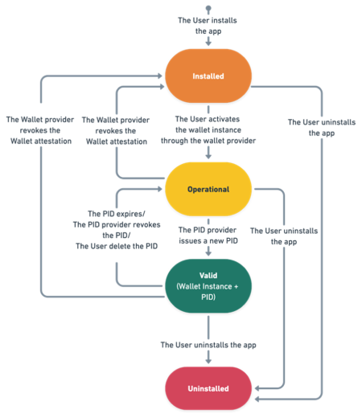
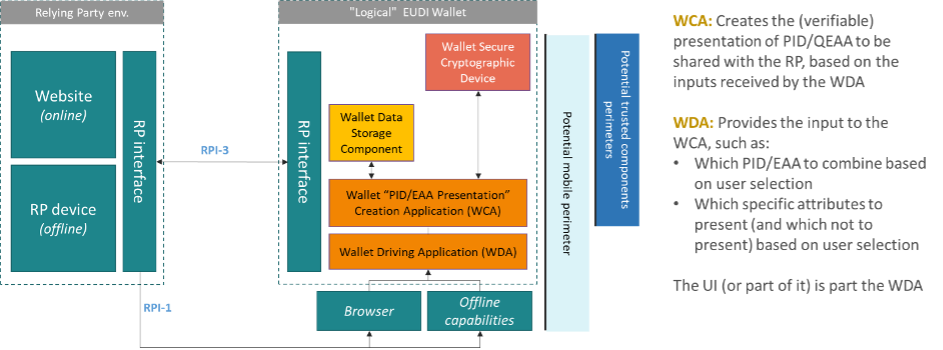
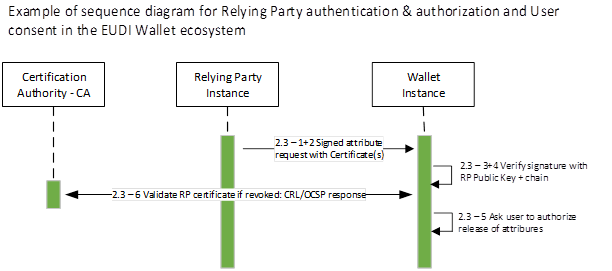

Architecture and Reference Framework
February 2024
Version 1.3.0
| Version | Date1 | Changes |
|---|---|---|
| 1.0.0 | 26 January 2023 | Initial version |
| 1.1.0 | 20 April 2023 | Addition of services blueprints for use cases on:
|
| 1.2.0 | 22 June 2023 |
|
| 1.3.0 |
|
1 Introduction
1.1 Context
On 3 June 2021, the European Commission adopted a Recommendation2 calling on Member States to work towards the development of a Toolbox including a technical Architecture and Reference Framework (hereinafter the ARF), a set of common standards and technical specifications and a set of common guidelines and best practices.
The Recommendation specifies that these outcomes will serve as a basis for the implementation of the proposal for a European Digital Identity Framework3, without the process of developing the Toolbox interfering with, or prejudging the legislative process.
The Recommendation foresees that the Toolbox is developed by Member States' experts in the eIDAS Expert Group4 in close coordination with the Commission and, where relevant for the functioning of the European Digital Identity (EUDI) Wallet infrastructure, other concerned public and private sector parties.
Following the indicative timeline set out in the Recommendation, a process and working procedures were agreed on 30 September 2021 and discussed in a non-paper on a high-level description of the EUDI Wallet ecosystem, proposed by the Commission.
On this basis, an outline was defined providing a more detailed description of the EUDI Wallet concept, its functionalities and security aspects and on several core, use cases between October and December 2021. That work resulted in the Outline of the ARF, adopted by the eIDAS Expert Group in February 2022. The Outline was published on Futurium5 for public feedback. When the feedback period closed on 15 April 2022, 36 stakeholders had provided their feedback on the Outline.
The eIDAS Expert Group has since further developed the concepts and specifications for the European Digital Identity Framework based on the Commission's legislative proposal6, and will continue to do so until the legislative negotiations have been concluded and implementing acts have been adopted.
The eIDAS Expert Group adopted version 1.2.0 of this document on 21st of June 2023. As of version 1.3.0, this document has been released as a draft to gather public feedback prior to its adoption by the Expert Group.
1.2 Purpose of This Document
The purpose of the document is to provide all the specifications needed to develop an interoperable EUDI Wallet Solution based on common standards and practices. The document presents a state-of-play of ongoing work of the eIDAS Expert Group and does not imply any formal agreement regarding its content or the legislative proposal. This document will be complemented and updated over time through the process of establishing the toolbox, as described in Chapter 9. Once completed the document will describe a comprehensive Architecture and Reference Framework covering all the specifications needed to implement a European Digital Identity Wallet Solution.
While Chapters 2-5 and 8-10 are descriptive, Chapters 6 and 7 specify requirements for PID Providers, (Q)EAA Providers, EUDI Wallet Solution Providers, Relying Parties and other parties in the EUDI Wallet ecosystem. The capitalised imperatives in the document are used in accordance with RFC 2119.
This document itself holds no legal value and SHALL not prejudge the forthcoming legislative process and the final mandatory legal requirements for European Digital Identity Wallets. This document will be aligned to the outcome of the legislative negotiations of the proposal for a European Digital Identity Framework. Only the finally adopted European Digital Identity Framework Regulation, and the implementing and delegated acts adopted under that legal basis, will be mandatory.
1.3 Use of This Document
This document is mainly meant to be used by the European Commission developing a reference implementation of an EUDI Wallet and the consortia piloting the use of the reference implementation in the context of Pilots. Experience of implementing this specification may lead to improvements of this document, in accordance with Chapter 9.
1.3.1 The Reference Implementation of an EUDI Wallet
The Commission will provide a reference implementation of an EUDI Wallet in a mobile form factor. The source code for the EUDI Wallet reference implementation will be provided as open source for re-use by implementers across Europe. The first implementers will be the projects selected to carry out Large Scale Pilots (LSPs), following a call for proposals. The LSP projects will be engaged in the further development of the reference implementation of an EUDI Wallet. The Commission will also initially supply central services as needed for the functioning of the EUDI Wallet reference implementation.
The Commission intends to use the ARF to develop the EUDI Wallet reference implementation.
1.3.2 Guidance for the Large-Scale Pilots (LSP)
To support the development of a reference implementation of an EUDI Wallet and to pilot its usage across different priority use cases, the Commission launched a call for proposals on 22nd February 2022 under the Digital Europe Programme to pilot large-scale use cases for the EUDI Wallet.
The objective of the Large Scale Pilots (LSP) call is to co-fund the piloting of the EUDI Wallet based on a reference implementation of an EUDI Wallet, taking into account project specificities, existing national notified eID and wallet developments and implementation situations, around the different cross-border use cases involving both public and private stakeholders.
The ARF will be used by the LSPs to inform and guide pilot system design and architecture development together with the release of the reference implementation.
The LSPs are expected to provide feedback on the ARF as they develop and interact with Relying Party services, Qualified or non-qualified Electronic Attestations of Attributes (Q)EAA Providers, Person Identification Data (PID) Providers and Users in meaningful transactions under the proposed use cases.
2 Definitions
In addition to Article 3 of the proposed amendment to the legal text, the following definitions are provided to either highlight those most relevant to the Architecture and Reference Framework or to introduce additional terms not defined in the legal text (denoted with a *).
| Term | Description |
|---|---|
| Attestation | A signed set of attributes, in either the mdoc format specified in [ISO18013-5] or the SD-JWT format specified in [SD-JWT]. This may be a PID, QEAA or EAA. |
| Attribute | A feature, characteristic or quality of a natural or legal person or of an entity, in electronic form. - eIDAS Regulation amendment proposal |
| Authentic Source | A repository or system, held under the responsibility of a public sector body or private entity, that contains attributes about a natural or legal person and is considered to be the primary source of that information or recognised as authentic in national law. – eIDAS Regulation amendment proposal |
| Electronic Attestation of Attributes (EAAs) | An attestation in electronic form that allows the authentication of attributes - eIDAS Regulation amendment proposal |
| National Accreditation Bodies (NAB)* | A body that performs accreditation with authority derived from a Member State under Regulation (EC) No 765/2008. |
| Person Identification Data (PID) | A set of data enabling the identity of a natural or legal person, or a natural person representing a legal person to be established - eIDAS Regulation. |
| Person Identification Data Provider* | A Member State or other legal entity providing Person Identification Data to Users. |
| Public Key Infrastructure (PKI)* | Systems, software, and communication protocols that are used by EUDI Wallet ecosystem components to distribute, manage, and control public keys. A PKI publishes public keys and establishes trust within an environment by validating and verifying the public keys mapping to an entity. |
| Qualified Electronic Attestations of Attributes (QEAA) | An Electronic Attestation of Attributes, which is issued by a Qualified Trust Service Provider and meets the requirements laid down in Annex V. - eIDAS Regulation amendment proposal |
| Qualified Electronic Attestations of Attributes (QEAA) provider* | (Qualified) Trust Service Provider issuing (Q)EAA. Note: there may be multiple (Q)EAA Providers. |
| Qualified Electronic Signature Creation Device (QSCD) | Software or hardware used to create an electronic signature that meets the requirements laid down in Annex II of the eIDAS Regulation amendment proposal. -eIDAS Regulation and eIDAS Regulation amendment proposal |
| Qualified Trust Service Provider (QTSP) | A Trust Service Provider who provides one or more Qualified Trust Services and is granted the qualified status by the supervisory body. - eIDAS Regulation |
| Relying Party* | A natural or legal person that relies upon an electronic identification or a Trust Service. – eIDAS Regulation In the case of the EUDI Wallet, the Relying Party relies on electronic identification or the Trust Service originating from an EUDI Wallet. |
| Selective Disclosure* | The capability of the EUDI Wallet that enables the User to present a subset of attributes provided by the PID and/or (Q)EAAs. |
| Trust* | Trust is the characteristic that one party, is willing to rely upon a third-party entity to execute a set of actions and/or to make a set of assertions about a set of subjects and/or scopes[^7]. |
| Trust Framework* | A legally enforceable set of operational and technical rules and agreements that govern a multi-party system designed for conducting specific types of transactions among a community of participants and bound by a common set of requirements. |
| Trust model* | Collection of rules that ensure the legitimacy of the components and the entities involved in the EUDI Wallet ecosystem. |
| Trust Service Provider (TSP) | A natural or a legal person who provides one or more Trust Services, either as a qualified or as a non-qualified Trust Service Provider. - eIDAS Regulation |
| Trust Service | An electronic service normally provided against payment which consists of: (a) the creation, verification, and validation of electronic signatures, electronic seals or electronic time stamps, electronic registered delivery services, electronic attestation of attributes and certificates related to those services; (b) the creation, verification and validation of certificates for website authentication; (c) the preservation of electronic signatures, seals or certificates related to those services; (d) the electronic archiving of electronic documents; (e) the management of remote electronic signature and seal creation devices; (f) the recording of electronic data into an electronic ledger. - eIDAS Regulation amendment proposal |
| Trusted List* | Repository of information about authoritative entities in a particular legal or contractual context which provides information about their current and historical status. |
| User* | A natural or legal person using an EUDI Wallet. |
| EUDI Wallet Instance* | Instance of an EUDI Wallet Solution belonging to and which is controlled by a User. |
| Relying Party Instance* | A software module with the capability to interact with a Wallet Instance and to perform Relying Party authentication, that is controlled by a Relying Party. |
| EUDI Wallet Provider* | A public or private organisation, responsible for the operation of an eIDAS-compliant EUDI Wallet Solution that can be instantiated on a User's device, e.g., through installation and initialization. |
| EUDI Wallet Solution* | An EUDI Wallet Solution is the entire product and service provided by an EUDI Wallet Provider, and offered to all Users of that Solution. |
| Wallet Secure Cryptographic Application (WSCA)* | A Wallet Secure Cryptographic Application (WSCA) is software provisioned within the Wallet Secure Cryptographic Device (WSCD). It is tasked with executing all security-sensitive operations such as generating, safeguarding, and handling cryptographic keys and assets. Additionally, it facilitates communication with the Wallet Instance. |
| Wallet Secure Cryptographic Device (WSCD)* | Hardware-backed secure environment for creating, storing, and/or managing cryptographic keys and data. Examples include Secure Elements (SE), Trusted Execution Environments (TEEs), and (remote or local) Hardware Security Module (HSM). |
Table 1: Definitions
* Additional to definitions in Article 3 of the eIDAS Regulation or its amendment proposal.
3 Use cases for the EUDI Wallet
The development of EUDI Wallet specifications is steered by use cases that facilitate understanding of user experience while capturing the value proposition and business requirements of the EUDI Wallet. To accomplish this, the eIDAS Expert Group begins by creating service blueprints for each EUDI Wallet use case. These blueprints are visual representations of the various components and processes involved in providing a service to users and serve as a tool for pinpointing potential areas for enhancement, optimising user experience, and streamlining service delivery. These blueprints then act as the basis for establishing use case rulebooks and common specifications for all use cases.
The service blueprints of the use case can be found in the annexes as attached documents. It is important to note that the service blueprint documents offer a viable solution for each use case, but alternatives and optional steps do exist. For instance, displaying stored data which the user has already approved to release might be optional. Furthermore, user journeys may differ depending on the chosen implementation approach, such as asynchronous attribute storage or synchronous retrieval. This could affect aspects like providing approval to retrieve and release data.
The eIDAS Expert Group has described service blueprints for the following use cases: * Identification and authentication to access online services, see section 3.1, * Mobile Driving Licence, see section 3.2, * A number of other use cases that will be detailed in subsequent versions of this document, see section 3.3.
3.1 Identification and authentication to access online services
The primary purpose of the EUDI Wallet is to offer secure identification and authentication of users at a high Level of Assurance (LoA) for both public and private online services. This essential functionality ensures that Relying Parties can confidently verify that they are interacting with the correct User.
In this use case, the User is utilising the EUDI Wallet Instance to confirm their identity. They access online services that demand authentication and currently employ multiple methods for identity verification while accessing these services. The User is also concerned about sharing person identification data (PID) during online interactions. Their objectives include identifying themselves with services requiring user identification and maintaining control over personal data sharing.
This use case encompasses the entire EUDI Wallet life cycle from the User's viewpoint, from obtaining a valid Wallet Instance to identifying and authenticating the User within an online service. The focus of the current description is a workable remote same-device flow (refer to section 7.4), where a natural person User employs a single mobile device for both securing the session and accessing the service's information.
PID issuance requirements, PID attribute schema and Trust Infrastructure details are further detailed in Chapter 6 and Annex A.6.
3.2 Mobile Driving Licence
A significant use case for the EUDI Wallet involves allowing Users to acquire, store, and display a mobile Driving Licence (mDL) as an attestation to prove their driving privileges. In this use case, the User employs an EUDI Wallet to present a mDL to a Relying Party (e.g., the Traffic Police)8.
The use case description concentrates on proximity supervised and unsupervised flows, which involve scenarios where the User is physically near a Relying Party, and the mDL attribute exchange and disclosure occurs using proximity technologies (e.g. NFC, Bluetooth). The two proximity flows have one significant difference: in the supervised flow, the EUDI Wallet presents mDL attributes to a human Relying Party or under their supervision (who may also use a device); whereas in the unsupervised flow, the EUDI Wallet presents mDL attributes to a machine without human oversight.
(Q)EAA issuance requirements, mDL attribute schema and Trust Infrastructure details are further detailed in Chapter 6 and Annex A.7.
3.3 Other use cases
In subsequent versions of this document, the following use cases will be detailed as service blueprints:
Health
Easy access to health data is crucial in both national and cross-border contexts. An EUDI Wallet Instance MAY enable access to patient summary, ePrescriptions, etc.
Educational credentials and professional qualifications
Providing documents for qualification recognition procedures can be costly and time-consuming for end Users, Relying Parties such as companies and employers, and (Q)EAA providers such as education and training providers or other academic institutions. For example, digital diploma attestations could be presented cross-border in a verifiable, trusted, and consumable format to another education or training institution or a prospective employer. An EUDI Wallet Instance may be a repository for educational digital credentials as Electronic Attestations of Attributes and a means for exchanging them by a learner.
Digital Finance
The EUDI Wallet Solutions SHALL facilitate complying with strong customer authentication requirements. In line with the Commission's Retail Payments Strategy9, the use case would be developed in close coordination with Member States' advisory groups on retail payments and the finance industry.
Digital Travel Credential
EUDI Wallet can store Digital Travel Credentials enabling Users to benefit from more seamless travel.
This work may in future be extended to additional use cases.
4 European Digital Identity Wallet Ecosystem
This Chapter describes the EUDI Wallet ecosystem as it is foreseen in the Commission's legislative proposal.
4.1 Roles in the Ecosystem
The roles of the EUDI Wallet ecosystem are described in Figure 1 and detailed in the following sections.

Figure 1: Overview of the EUDI Wallet roles
-
Users of EUDI Wallets
-
EUDI Wallet Providers
-
Person Identification Data Providers
-
Trusted Lists providers
-
Qualified Electronic Attestation of Attributes (QEAA) Providers
-
Non-qualified Electronic Attestation of Attributes (EAA) Providers
-
Qualified and non-qualified certificate for electronic signature/seal Providers
-
Authentic Sources
-
Relying Parties
-
Conformity Assessment Bodies (CAB)
-
Supervisory bodies
-
Device manufacturers and related subsystems providers
-
(Q)EAA Schema Providers
-
National Accreditation Bodies
4.1.1 Users of EUDI Wallets
Users of EUDI Wallets use the EUDI Wallet instance to receive, store and present PID, QEAA or EAA about themselves, including to prove their identity. Users can create Qualified Electronic Signatures and Seals (QES) using an EUDI Wallet instance.
Who can be a User of an EUDI Wallet depends on national law. The use of an EUDI Wallet by citizens is not mandatory under the legislative proposal. However, each Member State SHALL provide at least one European Digital Identity Wallet within 24 months after the entry into force of the implementing acts referred to in the Regulation.
4.1.2 EUDI Wallet Providers
EUDI Wallet Providers are Member States or organisations either mandated or recognized by Member States making the EUDI Wallet available for end Users. The terms and conditions of the mandate or recognition are for each Member State to determine.
The EUDI Wallet Providers make available to a User, through an instance of their EUDI Wallet Solution, a combination of several products and Trust Services foreseen in the legal proposal, which give the User full control over the use of their Person Identification Data (PID) and Qualified or non-qualified Electronic Attestations of Attributes (QEAA or EAA), and any other personal data within their EUDI Wallet. From a technical viewpoint, this may also imply guaranteeing a User sole control over sensitive cryptographic material (e.g., private keys) related to their PID and/or (Q)EAA, including in use cases for electronic identification and creating a signature or seal.
EUDI Wallet Providers are responsible for ensuring compliance with the requirements for EUDI Wallets.
4.1.3 Person Identification Data (PID) Providers
PID Providers are trusted entities responsible to:
- verify the identity of the EUDI Wallet User in compliance with LoA High requirements,
- issue PID to the EUDI Wallet in a harmonised common format and
- make available information10 for Relying Parties to verify the validity of the PID.
The terms and conditions of these services are for each Member State to determine.
PID Providers MAY e.g., be the same organisations that today issue official identity documents, electronic identity means, EUDI Wallet Providers etc. EUDI Wallet Providers MAY be the same organisations as PID Providers. In case an organisation acts as both a PID Provider and a Wallet Provider, it SHALL comply with all requirements for both PID Providers and Wallet Providers.
4.1.4 Trusted List Providers
The specific status of a role in the EUDI Wallet ecosystem SHALL be verified in a trustworthy manner. Such roles are:
- EUDI Wallet Providers
- Person Identification Data Providers
- Qualified Electronic Attestation of Attributes (QEAA) providers
- Qualified certificate for electronic signature/seal (QC) providers
- Relying Parties
- Non-qualified Electronic Attestation of Attributes (EAA) providers
- Non-qualified certificate for electronic signature/seal providers
- Providers of other Trust Services
- Catalogues of attributes and schemes for the attestations of attribute providers
Other roles may be necessary and thus need to be defined and explicitly mentioned depending on the specific role and their criticality for example the different roles and actors involved with remote signing processes.
When used, Trusted List11 need to provide a registration service for the relevant entities, maintain a registry and enable third party access to the registry information. The terms and conditions of entities to become registered are for each registrar to determine unless specified in e.g., sectoral rules.
4.1.5 Qualified Electronic Attestation of Attributes Providers
Qualified EAA are provided by QTSPs. The general Trust Framework for QTSPs apply also to QEAA, but specific rules for this Trust Service need to be defined as well. QEAA Providers maintain an interface for requesting and providing QEAAs, including a mutual authentication interface with EUDI Wallets and potentially an interface towards Authentic Sources to verify attributes. QEAA Providers provide information or the location of the services that can be used to enquire about the validity status of the QEAAs, without having an ability to receive any information about the use of the attestations. The terms and conditions of these services are for each QTSP to determine, beyond what is specified in the eIDAS Regulation.
4.1.6 Non-Qualified Electronic Attestation of Attributes Providers
Non-qualified EAA can be provided by any Trust Service Provider. While they are supervised under eIDAS, it can be assumed that other legal or contractual frameworks than eIDAS mostly govern the rules for provision, use and recognition of EAA. Such other frameworks may cover policy areas such as driving licences, educational credentials, digital payments, although they may also rely on qualified Electronic Attestation of Attributes Providers. For EAA to be used, TSPs offer Users a way to request and obtain EAA, meaning they need to technically comply with EUDI Wallet interface specifications. Depending on the domain rules, EAA providers may provide validity information about EAA, without having an ability to receive any information about the use of the EAA. The terms and conditions of issuing EAAs and related services are subject to sectoral rules.
4.1.7 Qualified and Non-Qualified Certificates for Electronic Signature/Seal Providers
Article 6a(3) of COM(2021)281 final requires the EUDI Wallet to enable the User to create qualified electronic signatures or seals. This goal can be reached by several ways:
-
The EUDI Wallet is certified as a qualified signature/seal creation device (QSCD), or
-
It implements secure authentication and signature/seal invocation capabilities as a part of a local QSCD or a remote QSCD managed by a QTSP.
EUDI Wallet interfaces with QSCDs will be further expanded in future versions of this document.
4.1.8 Providers of other Trust Services
EUDI Wallet interaction with providers of other qualified or non-qualified Trust Services such as timestamps may be further described in future versions of the ARF.
4.1.9 Authentic Sources
Authentic Sources are the public or private repositories or systems recognised or required by law containing attributes about a natural or legal persons. The Authentic Sources in scope of Annex VI of the legislative proposal are sources for, for instance, attributes on address, age, gender, civil status, family composition, nationality, education and training qualifications titles and licences, professional qualifications titles and licences, public permits and licences, financial and company data. Authentic Sources in scope of Annex VI are required to provide interfaces to (Q)EAA Providers to verify the authenticity of the above attributes, either directly or via designated intermediaries recognised at national level. Authentic Sources MAY also issue (Q)EAAs themselves if they meet the requirements of the eIDAS Regulation.
It is up to the Member States to define terms and conditions for the provisioning of these attestations, but according to the minimum technical specifications, standards, and procedures applicable to the verification procedures for qualified electronic attestations of attributes.
4.1.10 Relying Parties
Relying Parties are natural or legal persons that rely upon an electronic identification or a Trust Service. In the context of EUDI Wallets, they request the necessary attributes contained within the PID dataset, QEAA and EAA from EUDI Wallet Users to rely on the EUDI Wallet, subject to the acceptance by the owner of the Wallet (User) and within the limits of applicable legislation and rules. The reason for reliance on the EUDI Wallet may be a legal requirement, a contractual agreement, or their own decision. To rely on the EUDI Wallet, Relying Parties need to inform the Member State where they are established and their intention for doing so. Relying Parties need to maintain an interface with the EUDI Wallet to request attestations with mutual authentication. Relying Parties are responsible for authenticating PID and (Q)EAA.
4.1.11 Conformity Assessment Bodies (CAB)
The EUDI Wallets SHALL be certified by accredited public or private bodies designated by Member States12. QTSPs SHALL be audited regularly by Conformity Assessment Bodies (CABs). CABs are accredited by a national accreditation body according to Regulation 765/2008 as responsible for carrying out assessments on which Member States will have to rely before issuing a EUDI Wallet or providing the qualified status to a Trust Service Provider. The standards and schemes used by CABs to fulfil their tasks to certify EUDI Wallets are specified further in the Toolbox process.
4.1.12 Supervisory Bodies
The supervisory bodies are notified to the Commission by the Member States, which supervise QTSPs and act, if necessary, in relation to non-qualified Trust Service Providers.
4.1.13 Device Manufacturers and Related Entities
EUDI Wallets will have several interfaces with the devices they are based on, which may be for the following purposes:
- Local storage.
- Online Internet access.
- Sensors such as smartphone cameras, IR sensors, microphones, etc.
- Proximity communication channels such as Bluetooth Low Energy (BLE), Wi-Fi Aware, Near Field Communication (NFC).
- User interfaces such as screen, flashlights, speakers etc.
- Smart cards and secure elements for generating, storing and using private keys and other sensitive cryptographic material.
For secure cryptographic material storage, specific devices or services may be interfaced with. Other related entities may be service providers such as cloud service providers, app store providers etc.
The legal proposal sets constraints (e.g., compliance with LoA High) for which kinds of devices and services may be used for the purpose of issuing the EUDI Wallet. Likewise, the availability as well as terms and conditions of device interface providers and related service providers will set further constraints for EUDI Wallet Providers.
4.1.14 Qualified and Non-Qualified Electronic Attestation of Attributes Schema Providers
(Q)EAA Schema Providers publish schemas and vocabularies describing (Q)EAA structure and semantics. It may enable other entities such as Relying Parties to discover and validate (Q)EAA. The Commission sets out the minimum technical specifications, standards, and procedures for this purpose. Common schemas, including by sector- specific organisations are critical for wide-spread adoption of (Q)EAAs.
4.1.15 National Accreditation Bodies
National Accreditation Bodies (NAB) under Regulation (EC) No 765/200813 are the bodies in Member States that perform accreditation with authority derived from the Member State. NABs accredit CABs as competent, independent, and supervised professional certification bodies in charge of certifying products/services/processes against normative document(s) establishing the requirements (e.g., legislations, specifications, protection profiles). NABs monitor the CABs to which they have issued an accreditation certificate.
4.2 Lifecycle of an EUDI Wallet
The legal text defines the EUDI Wallet on a high level of abstraction, as well as for the EUDI Wallet Providers that carry the legal obligation to make sure that the Users can get a valid and fully functional EUDI Wallet. The lifecycle of an EUDI Wallet will have some interactions with the Trusted List Providers that specify the status of a role in the EUDI Wallet ecosystem in a trustworthy manner. Developing an Architecture and Reference Framework that SHALL provide guidance to the development of such EUDI Wallet requires a more detailed level of abstraction to be efficient and to yield a sufficiently expressive architecture description to be prescriptive.
This Chapter starts from a minimal object model and defines the lifecycle of the core concepts: EUDI Wallet Solution, PID, (Q)EAA, and EUDI Wallet Instance. These are chosen as a starting point because the joint development of the ARF showed that the lifecycles of these concepts are closely intertwined, which led to unclear description and consequently misunderstandings.
The object model will be extended as required in future versions of the ARF.
4.2.1 Simplified EUDI Wallet Object Model
Figure 2 below distinguishes the concepts of EUDI Wallet Solution and EUDI Wallet Instance. An EUDI Wallet Solution is the entire product and/or service provided by a EUDI Wallet Provider. A EUDI Wallet Instance is a personal instance of a EUDI Wallet Solution that belongs to and is controlled by a User.

Figure 2: Simplified EUDI Wallet Object Model
This definition is not prescriptive of form factor, hence depending on the implementation a EUDI Wallet Instance may consist of a single mobile app, or a set of local and remote components available to a specific User.
4.2.2 PID and (Q)EAA Lifecycles
The lifecycles of PID and (Q)EAA are essentially identical, however, for the scope of this description we refer subsequently only to PID. The text of this section applied to PID applies mutatis mutandis to (Q)EAA.
PID in the context of the EUDI Wallet begins its lifecycle when being issued to a EUDI Wallet Instance. Please note that this means that the management of attributes in the Authentic Source (adhering to national structures and attribute definitions) is outside of the scope of the ARF.
Note that for certain use cases, the PID may be pre-provisioned, meaning it is not yet valid when issued, but reaches its validity later. If PID is issued on or after the validity start date, it is immediately considered the state directly changes to valid. This means, however, that PID could be "pre-issued".

Figure 3: State-chart of PID
There are two possible transitions from a valid PID: it automatically expires, by passage to the 'validity end date' or it is actively revoked by its Provider. Expiration and revocation are essentially independent transitions. Once PID is expired or revoked, it cannot transition back to valid. If a change needs to be made to the PID (i.e., because of a User name change), the PID Provider SHALL always issue a new PID.
4.2.3 EUDI Wallet Solution Lifecycle
An EUDI Wallet Solution has a state of its own, as defined by Article 10a of the Regulation. The state of the Solution affects the state of all EUDI Wallet Instances of that EUDI Wallet Solution. The Candidate state is the first state of a EUDI Wallet Solution. This means it is fully implemented and the EUDI Wallet Provider requests the solution to be certified as EUDI Wallet.
If all the legal and technical criteria have been met, including the certification of the Wallet Solution by CAB(s), then a Member State may decide to start providing Instances of the Solution to Users. The state of the Solution becomes "valid". According to Article 6d, Member State informs the Commission of each change in the certification status of their EUDI Wallet Solutions. This means the EUDI Wallet Solution can be officially launched, and Instances of the Solution can be provided to Users.

Figure 4: State-chart of Wallet Solution
Under the legal conditions in Article 10a, paragraph 1, the issuing Member State can temporarily suspend an EUDI Wallet Solution. This would for example be the result of a critical security issue on that EUDI Wallet Solution. This leads to the suspended state. Under Article 10a, paragraph 2, the issuing Member State can unsuspend the Wallet Solution and continue issuance, bringing the Solution back to the valid state. Under paragraph 3, the EUDI Wallet Solution can be completely withdrawn.
4.2.4 EUDI Wallet Instance Lifecycle
An EUDI Wallet Instance lifecycle begins when the User installs the mobile app component of the EUDI Wallet solution provided by The EUDI Wallet Provider. Once an EUDI Wallet Instance is installed and activated by the User and the EUDI Wallet Provider, it is in an operational state. In this state, the User manages the EUDI Wallet Instance, which may involve:
- The EUDI Wallet Provider updating the EUDI Wallet Instance,
- The EUDI Wallet Provider revoking the EUDI Wallet Instance, possibly at the User's request. Revocation of the Wallet Instance MAY be accomplished by revoking the Wallet Instance attestation (refer to section 6.3.4.2),
- The User uninstalling the EUDI Wallet Instance.
In the operational state of the EUDI Wallet Instance:
- The User can request an attestation, such as a PID or a (Q)EAA. The EUDI Wallet Instance may also fulfil non-EUDI specific functions, like storing loyalty cards, or any other type of certification that doesn't explicitly necessitate a link to a valid PID.
- Once an attestation is issued to the EUDI Wallet Instance, the User has the capability to release the attributes from this attestation to a Relying Party, based on their discretion.
- The PID/(Q)EAA Provider continues to be responsible for the management of the attestation, which may include re-issuing it. The PID/(Q)EAA Provider can also revoke the attestation, possibly at the User's request. The specific management options will be detailed in subsequent documents.
Once an EUDI Wallet Instance holds a valid PID set, it is considered valid. If the PID expires or is revoked, the EUDI Wallet is not automatically unusable, its state is merely downgraded back to operational. This may affect the validity of a (Q)EAA or a certificate for QES.

Figure 5: State-chart of Wallet Instance
Please note that this is independent from the possibility of a PID or (Q)EAA Provider to revoke their attestations.
5 EUDI data model
The European Digital Identity Ecosystem data model manages the following types of attestations: * Person Identification Data (PID): An attestation in electronic form that allows the authentication of attributes proofing the identity of a natural or legal person, or a natural person representing a legal person, or of an object. * Electronic Attestation of Attributes (EAA): An attestation in electronic form that allows the authentication of attributes describing features, characteristics or qualities of a natural or legal person or of an entity, or a natural person representing a legal person, or of an object. * Qualified Electronic Attestation of Attributes (QEAA): an electronic attestation of attributes (EAA), which is issued by a qualified trust service provide, and adhering to Annex V of the regulation.
5.1 Person Identification Data
This section details the PID set as presented by the EUDI Wallet. Further specifications regarding PID are detailed in the PID Rule Book, found in Annex A.6.
A PID Provider May issue a PID set to the EUDI Wallet and enable the use of the EUDI Wallet as an electronic identification means when accessing online and offline services.
The mechanisms through which the PID is generated and provided to the EUDI Wallet are up to the Member States and are only constrained by legal requirements such as the requirements of LoA High, GDPR or any other national or union law.
In the following the data format as presented to the Relying Party will be described, without any assumptions on how the EUDI Wallet retrieved or generated this data beforehand.
5.1.1 PID format and associated requirements
5.1.1.1 Principles for the PID set
This Chapter proposes the definition of the PID set and discusses further specification, data minimization and identifiers. The dataset proposed herein is constructed based on the following principles:
- No two persons SHALL have the same PID set of values for mandatory attributes.
- The mandatory data set is by nature limited to the (narrow) intersection of what all Member States can provide for all natural and legal persons and what is needed for electronic identification purposes. The mandatory data set will be complemented by optional attributes available only in some Member States to ensure it is usable for electronic identification purposes.
5.1.1.2 PID Attributes for Natural Persons
The below table provides an overview of mandatory and optional PID attributes for natural persons.
| Mandatory PID Attributes | Optional PID Attributes |
|---|---|
| family_name | family_name_birth |
| given_name | given_name_birth |
| birth_date | birth_place |
| resident_address | |
| gender | |
| age_over_18 | |
| age_over_NN | |
| age_in_years | |
| age_birth_year | |
| birth_country | |
| birth_state | |
| birth_city | |
| resident_address | |
| resident_country | |
| resident_state | |
| resident_city | |
| resident_postal_code | |
| resident_street | |
| resident_house_number | |
| nationality |
Table 2 - Mandatory and optional PID attributes for natural persons
Possible additional optional attributes have been added to facilitate a wider range of authentication options both online and offline as well as addressing learning from the current eIDAS implementations. Metadata associated with a PID set is further detailed in Annex A.6.
5.1.2 Issuing requirements for PID
The following table defines the requirements applicable to PID regarding what information is included in the attestation, such as for purposes of validity checks, authenticity, validation, policies, the data model, and formats.
Future versions of this text may expand the table to specify requirements. Note that these requirements are primarily aimed at the first version of the EUDI Wallet Solution specifications, and that they may change as the specifications evolve.
| # | Requirement |
|---|---|
| 1 | PID attestation MUST contain the information required to identify the PID Provider. |
| 2 | PID attestation MUST contain the information required to perform a data integrity check. |
| 3 | PID attestation MUST contain the information required for verifying the authenticity. |
| 4 | PID attestation MUST contain all the information required to perform validity status checks on the attestation. |
| 5 | PID attestation MUST include all the information (as an attribute or as any other signed value) required to perform verification of the holder binding by a Relying Party. |
| 6 | PID attestation MUST be issued to be presented in accordance with both the data model specified in ISO/IEC 18013-5:2021 and the W3C Verifiable Credentials Data Model 1.1. |
| 7 | PID attestation MUST be encoded as CBOR and JSON format. |
| 8 | PID attestation MUST enable Selective Disclosure of attributes by using Selective Disclosure for JWTs (SD-JWT) and Mobile Security Object (ISO/IEC 18013-5) scheme accordingly to the data model. |
| 9 | PID attestation MUST use signatures and encryptions formats as detailed in JOSE RFCs and COSE RFCs. |
| 10 | PID attestation MUST use signature and encryption algorithms in accordance with SOG-IS ACM. |
Table 3 - Issuing requirements for PID
5.2 Qualified and Non-Qualified Electronic Attestation of Attributes
5.2.1 Issuing requirements for (Q)EAA
The following table defines the requirements applicable to (Q)EAA-s regarding what information is included in the attestation, such as for purposes of validity checks, authenticity, validation, policies related to key management, the data model, and formats.
(Q)EAA-s can be also issued under requirements applicable for PID.
Future versions of this text may expand the table to specify requirements. Note that these requirements are primarily aimed at the first version of the EUDI Wallet Solution specifications, and that they may change as the specifications evolve.
Mobile Driving Licence attestations are further specified in mDL Rule Book in Annex A.7.
| # | Requirement |
|---|---|
| 1 | (Q)EAA MUST contain the information required to identify the Provider. |
| 2 | (Q)EAA MUST contain the information required to perform a data integrity check. |
| 3 | (Q)EAA MUST contain the information required for verifying the authenticity of the (Q)EAA. |
| 4 | (Q)EAA MUST contain all the information required to perform validity status checks on the (Q)EAA. |
| 5 | (Q)EAA SHOULD include all the information (as an attribute or as any other signed value) required to perform verification of the holder binding by a Relying Party. |
| 6 | (Q)EAA MUST be issued in accordance with one of the data model specifications: ISO/IEC 18013-5:2021, W3C Verifiable Credentials Data Model 1.1. |
| 7 | **(Q)EAA SHOULD be encoded as one of the following formats: CBOR or JSON accordingly to the data model used for the attestation ** |
| 8 | EAA MAY be encoded as JSON-LD, see [JSON-LD]. |
| 9 | (Q)EAA SHOULD enable Selective Disclosure of attributes either by using Selective Disclosure for JWTs (SD-JWT) or Mobile Security Object (ISO/IEC 18013-5) scheme accordingly to the data model used for the attestation. |
| 10 | (Q)EAA SHOULD use one of the following signature and encryption formats as detailed in: JOSE RFCs, COSE RFCs accordingly to data model used for the attestation. |
| 11 | (Q)EAA SHOULD use signature and encryption algorithms in accordance with SOG-IS ACM. |
| 12 | (Q)EAA SHOULD be issued accordingly to OpenID4VCI protocol. |
Table 4 - Issuing requirements for (Q)EAA
5.3 Attestation rulebooks
Since version 1.2.0 of this document, the concept of an attestation rulebook has been introduced. This is designed to compile a set of rules, guidelines and standards governing the verification, management, and usage of a specific attestation or group of attestations related to a use case within the EUDI ecosystem. The primary goal of the rulebooks is to ensure interoperability, security, privacy, and trust for EUDI Wallet's attestations (PID and (Q)EAA).
Common compulsory specifications, rules, and guidelines are outlined in the architecture and reference framework document, while those specific to use cases are collated in the attestation's rulebooks. Two such rulebooks, namely the PID and mDL rulebooks, have currently been included as annexes to this document.
6 Trust Model
6.1 Overview and scope
The Trust Model describes, for all interactions in the lifecycle of a EUDI Wallet Instance and an attestation, which trust relationships SHALL exist between the interacting parties to enable these interactions.
Moreover, for the 'Attestation releasing' interaction in section 6.3.2, this version of this document also describes, on a high level, how this required trust can be established. This description includes references to existing or draft standards that define detailed security measures.
The trust model is valid for both remote and proximity use cases. However, technical measures taken to ensure that the requirements on trust are fulfilled may differ between these two use cases. Moreover, the authentication and authorization mechanisms will depend on the characteristics of the interacting parties.
Please note:
- For interactions other than the 'Attestation releasing' interaction in section 6.3.2, the technical measures are not yet described, although section headings have been added already.
- User privacy is not specifically discussed in this document.
6.1.1 Authentication and authorization
Within the EUDI Wallet ecosystem, many interactions take place between parties in which one party requests another party to release data or perform a task. For example, a User may ask a Provider to provide a PID or (Q)EAA to a Wallet, or a Relying Party may ask a User to release a specific attestation from its EUDI Wallet Instance. To be able to comply with such requests, these parties SHALL trust each other. This trust generally requires the existence of the following two conditions:
- The requestee is sure about the identity of the requester, and optionally the requester is sure about the identity of the requestee. This is referred to as (single-side or mutual) authentication.
- The requestee is sure that the requester has the right to request the data or task requested. This is referred to as authorization.
6.1.2 Assumptions on trust
This document makes the following assumptions regarding the need for trust in the EUDI Wallet ecosystem:
- For any party in the EUDI Wallet ecosystem, there is a risk that it could be impersonated by an attacker. Therefore, when any interaction between two parties takes place, both parties SHALL be able to authenticate the other. Note that this assumption does not mean that mutual authentication SHALL always take place; it just means that the possibility to do so SHALL exist and be available if one party has a business need to authenticate the other party it is interacting with. No authenticated party can be presumed trustworthy enough not to ask for attributes beyond their rights.
6.1.3 Other trust relations
Besides the trust relationships described in this Chapter, other trust relations SHALL exist as well. For instance, Users, Providers and Relying Parties SHALL implicitly trust certification bodies, trusted list providers, vendors, OEMs, operating systems, and app stores. In many contexts, this trust is primarily be rooted in authority and in procedural measures, such as public oversight, published security and operational policies, audits, etc., rather than in technical measures. To verify that parties are indeed interacting with a trusted authority, standard technical measures suitable for the context SHALL be used.
Moreover, besides the need for trust in the authenticity and authorization of other parties in the ecosystem, parties SHALL also be able to trust that the communication with such parties is confidential. Measures to ensure this are not explicitly discussed in this document.
6.2 Trust throughout a EUDI Wallet Instance lifecycle
6.2.1 Wallet Instance installation
6.2.1.1 Required trust relationships
When a User decides to install an EUDI Wallet Instance on their device, the following trust relationships SHALL exist:
- The User SHALL be able to trust that the Wallet Solution (i.e., the app or application the user is installing) is genuine, authentic and does not contain any malware or other threats.
- The User SHALL be able to trust that the PID Provider will issue the PID into an instance of a EUDI Wallet Solution.
- The User SHALL trust the EUDIW solution. This means that the User trusts the App store and the App publisher.
The next sections discuss these trust relationships.
6.2.1.2 User's trust in the EUDI Wallet Solution
To be done.
6.2.1.3 User's trust that the EUDI Wallet Solution is supporting the attestations
To be done.
6.2.2 EUDI Wallet Instance activation
6.2.2.1 Required trust relationships15
After its' installation, a new EUDI Wallet Instance will need to be activated by the Wallet Provider. Activation has at least the following purposes:
- The EUDI Wallet Provider makes the EUDI Wallet Instance identifiable, by assigning an identifier to the Wallet Instance. This identifier is internal; its purpose is to allow the EUDI Wallet Provider to identify the EUDI Wallet Instance, for example when the User requests that the EUDI Wallet Instance SHALL be revoked.
- The EUDI Wallet Provider sets up a secure (authenticated) communication channel between the EUDI Wallet Instance and the EUDI Wallet Provider backend, for future use.
- The EUDI Wallet Provider requests data about the User's device from the EUDI Wallet Instance. This data may include the communication technologies supported by the device and the characteristics of the WSCD used by the device to securely store cryptographic keys and data associated with the EUDI Wallet Instance and the attestations.
- The EUDI Wallet Provider issues a EUDI Wallet Instance Attestation to the EUDI Wallet Instance. This attestation contains data about the EUDI Wallet Provider, the EUDI Wallet Solution, the EUDI Wallet Instance, the device and the WSCD. The EUDI Wallet Instance attestation has the same technical format and content as other attestations. This implies that the attestation will contain a Wallet Instance public key. The EUDI Wallet Instance key pair is generated by the EUDI Wallet Instance during activation, using the WSCD present in, or connected to, the User's device. The EUDI Wallet Instance attestation also contains information that allows a Provider or Relying Party to verify that the EUDI Wallet Provider did not revoke the EUDI Wallet Instance attestation, and hence the EUDI Wallet Instance itself.
- The EUDI Wallet Provider locally associates the EUDI Wallet Instance with a particular User, including on-device or backend-based User authentication methods that will be used by the EUDI Wallet Instance to authenticate the User towards the EUDI Wallet Provider only. The User details SHALL NOT be included in the EUDI Wallet Instance attestation.
- The EUDI Wallet Provider sets up a User account. This User account is needed if the User wants to interact with the EUDI Wallet Provider without using their EUDI Wallet Instance. An example of this is a request to revoke a EUDI Wallet Instance in case the User's device is lost or stolen. EUDI Wallet Providers MAY also offer other instance-related services through this User account. Please note the following:
- In general, the EUDI Wallet Provider does not need to know the true identity of the User. An alias, for example an e-mail address, is sufficient. However, the EUDI Wallet Provider MAY request the true identity of the User to be able to offer additional services. It is up to the EUDI Wallet Provider to determine the conditions for creating an online account, and to the User to accept or refuse these conditions.
- The information in the User account, especially the identifier(s) for the User, the User's device, and the EUDI Wallet Instance (if any), SHALL be stored and used only in the EUDI Wallet Provider back office. The EUDI Wallet Provider SHALL NOT put this information in the EUDI Wallet Instance attestation.
For successful EUDI Wallet Instance activation, the following trust relations need to exist:
- The EUDI Wallet Instance needs to be able to trust the EUDI Wallet Provider, meaning that the instance is sure that it is dealing with the genuine EUDI Wallet Provider.
- The EUDI Wallet Provider needs to be able to trust the EUDI Wallet Instance. This means that the EUDI Wallet Provider is sure that the instance is indeed a true instance of their EUDI Wallet Solution, and not a fake app.
The next sections discuss these trust relationships.
6.2.2.2 EUDI Wallet Instance trusts Wallet Provider
To be done.
6.2.2.3 EUDI Wallet Provider trusts Wallet Instance
To be done.
6.2.3 EUDI Wallet Instance management
6.2.3.1 Required trust relationships
Starting from EUDI Wallet Instance activation and throughout its lifetime, a EUDI Wallet Instance SHALL be managed by the EUDI Wallet Provider. Management actions could be initiated by the following entities.
- The EUDI Wallet Provider. For example, to perform the installation of a new version of the Wallet Solution upon users request or approval.
- The User. For example, to request the Wallet Provider to revoke the Wallet Instance in case of loss or theft.
- The EUDI Wallet Instance, potentially. For example, to request an update of the EUDI Wallet Instance Attestation, as defined in section 6.2.2.
For this, the following trust relations need to exist:
- The User needs to be able to trust the EUDI Wallet Provider. This means that the User is sure that he is dealing with the genuine EUDI Wallet Provider responsible for their EUDI Wallet Instance.
- The EUDI Wallet Instance needs to be able to trust the EUDI Wallet Provider, meaning that the EUDI Wallet Instance is sure that it is dealing with the genuine EUDI Wallet Provider.
- The EUDI Wallet Provider needs to be able to trust the EUDI Wallet Instance. This means that the EUDI Wallet Provider is sure that the EUDI Wallet Instance is indeed a true instance of their EUDI Wallet Solution, and not a fake app.
- The EUDI Wallet Provider needs to be able to trust the User. This means that the EUDI Wallet Provider is sure that the User is indeed the User that was associated with the EUDI Wallet Instance during activation; see section 6.2.2.1.
The next sections discuss these trust relationships.
6.2.3.2 EUDI Wallet Instance trust in the Wallet Provider
Section 6.2.2.2. describes how a EUDI Wallet Instance can trust a Wallet Provider.
6.2.3.3 EUDI Wallet provider trust in the EUDI Wallet Instance
Section 6.2.3.3. describes how a EUDI Wallet Provider can trust a Wallet Instance.
6.2.3.4 User trust in the EUDI Wallet Provider
To be done.
6.2.3.5 EUDI Wallet Provider trust in the User
To be done.
6.3 Trust throughout an attestation lifecycle
6.3.1 Attestation issuance
6.3.1.1 Required trust relationships
When a User requests a Provider to issue a PID or (Q)EAA to their EUDI Wallet Instance, the following trust relationships SHALL exist:
- The User SHALL be able to trust the Provider, meaning that the User is sure that the attestation they receive is issued by an authorized Provider.
- The Provider SHALL be able to trust the User, meaning that the Provider is sure about the identity of the User. This is necessary to be able to determine the value of the attributes that the Provider will attest to. For instance, a PID Provider SHALL ensure it provides the correct family name and date of birth to the Wallet Instance. Please note that the method by which the provider performs user identification and authentication is out of scope of this document.
- The Provider SHALL be able to trust the EUDI Wallet Provider.
- The Provider SHALL be able to trust the EUDI Wallet Instance. This means the Provider can verify that the app that it is interacting with is indeed an instance of the approved Wallet Solution of a trusted EUDI Wallet Provider. Moreover, If the Provider has specific functional requirements for EUDI Wallet Instances containing 'their' attestations, the Provider SHALL be able to trust that the User's EUDI Wallet Instance indeed supports all these features.
The next sections discuss these trust relationships.
6.3.1.2 User trust in the Provider
To be done.
6.3.1.3 Provider trust in the User
To be done.
6.3.1.4 Provider trust in the EUDI Wallet Instance
To be done.
6.3.2 Attestation releasing
6.3.2.1 Required trust relationships
When a Relying Party (RP) requests a User to release some attributes from his/her EUDI Wallet Instance, the following trust relationships SHALL exist:
- The Relying Party SHALL be able to trust the attestation Provider.
- The Relying Party SHALL be able to trust that the attestation released by the EUDI Wallet Instance is authentic, meaning that it originated from a trusted Provider and has not been changed.
- The Relying Party SHALL be able to trust that the attestation Provider issued this attestation to the EUDI Wallet Instance that provided it to the Relying Party. In other words, the attestation was not copied and replayed. This is generally called device binding.
- The Relying Party SHALL be able to trust the EUDI Wallet Instance.
- The User SHALL be able to trust the Relying Party, meaning that the User is sure about the Relying Party's identity.
- The User SHALL be able to trust that the Relying Party does not request more data than it reasonably needs for the use case.
The next sections discuss these trust relationships.
Please note the following assumptions, which are valid at least for the current version of this document:
- All attestations are assumed to be signed by the attestation Provider, rather than by the EUDI Wallet Instance (the latter are sometimes called self-signed attestations). The only attestations that will be trusted by Relying Parties are those that are signed by a trusted attestation Provider. The only potential exception may be a pseudonym for the User. If the value of a pseudonym attribute is assigned by the User or generated by the Wallet instance, it MAY be signed by the EUDI Wallet Instance rather than the Provider. If so, a Relying Party using such a pseudonym SHALL accept the associated risks or mitigate it in an out-of-band manner. These risks may include the possibility of fake pseudonyms, created by an attacker capable of lifting an attestation private key from a WSCD.
- A Relying Party is assumed to trust the attestation Provider to have verified the technical properties of the EUDI Wallet Instance and the User's device and WSCD (as documented in the Wallet Instance attestation) at the time it issued the attestation. Consequently, the Relying Party does not verify these technical properties during the attestation release process. To elaborate: A Relying Party typically has a list of attestations that it accepts for a certain use case. For example, a Relying Party MAY accept a mobile driving license as a proof of identity. If so, that Relying Party SHALL accept any valid and authentic mDL, regardless of the mobile device it is installed on. If the Relying Party were to make its own independent assessment of the security of the User's device, there is a possibility that an mDL will not be accepted, even though it is valid. That would be confusing to Users and might diminish their trust in the EUDI Wallet Instance as well as the attestation.
- An attestation is assumed to be bound to the EUDI Wallet Instance (and thus the device) to which the Provider issued it, and the Relying Party will verify that this is indeed the case. In other words, a Relying Party verifies device binding as described in section 6.3.2.4. This is a consequence of the fact that either ISO/IEC 18013-5 or OpenID4VP is mandatory for the EUDI Wallet Solutions that are in scope of the current version of this document.
6.3.2.2 Relying Party trusts Provider
A Relying Party SHALL be able to verify that the Provider is trusted to issue the type of attestation in question. For instance, a Provider may be trusted to issue a diploma, but not a PID, or conversely.
As part of this verification process, the Relying Party also obtains a public key of the Provider, which functions as a trust anchor and allows it to verify the attestation signatures created by the Provider. There are at least two methods to communicate this public key, using peer-to-peer communication, or using a trusted list. The public key itself may be encapsulated, for instance in a X.509 certificate or in an Entity Statement according to OpenID Federation.
Peer-to-peer communication of the Provider public key (trust anchor) means that every Relying Party individually decides to trust each Provider. The Relying Party then obtains the Provider's public key via a manual or automated process agreed between the Provider and the Relying Party, for instance by downloading it from the Provider's website. A peer-to-peer process has the advantages of flexibility and low overhead. However, it is hardly scalable and therefore not suitable for attestations such as PIDs, mDLs, diplomas, or health insurance cards, for which there are tens to hundreds of different providers in the EU and thousands of Relying Parties, which moreover do not (necessarily) know each other. Moreover, a peer-to-peer process assumes that each Relying Party has sufficient technical knowledge and budget to judge the level of security of each Provider's systems and processes for, among others, private key management. This is not realistic for high-value attestations. A peer-to-peer process may therefore be suitable for low-value attestations in contexts where Providers and Relying Parties know each other, for example membership cards or vouchers.
For more valuable attestations, or for attestations for which Providers and Relying Parties do not know each other, a trusted list of Providers is a better solution. This trusted list is provided by a trusted list provider, which is a central party responsible for (and capable of) verifying that the level of security of an Providers' systems and processes is sufficient for the type of attestation it issues, and comparable to the level of security of other Providers for the same type of attestation. This may include requiring that a Provider documents these systems and processes, for example in a certificate policy complying with EN 319 411, and is audited regularly for compliance to that policy. The trusted list provider also validates that each Provider is (legally) allowed to issue the type(s) of attestation it wants to issue. The trusted list provider documents that in its trusted list, together with the public key (trust anchor) of each trusted Provider. The list is signed by the trusted list provider and can be downloaded and processed by a Relying Party in an automated fashion.
Please note the following:
- A trusted list provider may become a single point of failure. A successful attack may mean that untrusted Providers are put on the trusted list. It is therefore essential that the systems and processes used by a trusted list provider are secure.
- There can be multiple trusted list providers. It is conceivable that there will be trusted list providers on the EU level and for individual member states, as well as trusted list providers per sector, for example education or health care.
- It is not mandatory for each Relying Party to possess the root certificates of all Providers. Relying Parties will choose which trusted list providers they need to subscribe to, depending on the Member States and industries they are operating in.
Finally, note that freedom of contract applies to all Relying Parties. This means that a Relying Party can determine itself which Providers they want to recognize, except if there is a legal requirement that the attestations of certain Providers SHALL be accepted. That is generally the case for PID Providers and QEAA Providers. However, this does not mean that the above process is not necessary for these providers.
6.3.2.3 Relying Party trusts the authenticity of the attestation
The following steps are essential for ensuring that the Relying Party can trust the attestation:
- The Relying Party verifies the seal or signature over the attestation.
- The Relying Party verifies that the public key it used for verifying the seal or signature can be trusted, either because the Relying Party obtained the key in a manner described in section 6.3.2.2, or because the key is protected by means of a chain of trust that ends in a trusted Provider public key that was obtained in such a manner.
- The Relying Party validates that the Provider has not revoked the attestation.
If and only if all these verifications succeed, the Relying Party can trust the authenticity of the attestation.
Regarding the technical implementation of these steps:
- For proximity flows, requirements 6 and 7 in section 5.1.2 require support for [ISO18013-5]. This standard describes a mechanism for this authentication, called Provider data authentication.
- For step 1 above, this mechanism uses a cryptographically signed data construct called a Mobile Security Object (MSO). The seal or signature over the MSO is created by a Document Signer, which is a function of the Provider. The Document Signer certificate is signed by the Provider's certificate.
- For step 2 above, ISO/IEC 18013-5 specifies a Public Key Infrastructure, including certificate formats and a format for implementing a trust list.
- The mechanism for step 3 is described in section 6.3.4.
- For remote flows, requirements 6 and 7 in section 5.1.2 require support for [SD-JWT].
- For step 1 above, [SD-JWT] provides a similar trust mechanism as the MSO mechanism in ISO/IEC 18013-5.
- The mechanism for step 3 is described in section 6.3.4.
6.3.2.4 Relying Party trusts device binding
The Relying Party SHALL be able to trust that an attestation it receives was not copied and replayed. In other words, the Relying Party trusts that the attestation is bound to the same device to which the Provider issued it 16.
The Relying Party can trust that this is the case if the EUDI Wallet Instance signs some contextual information with the private key of the attestation. This information SHALL include a random number generated by the Relying Party. To verify this signature, the Relying Party needs to receive the public key of the attestation, which SHALL be signed (directly or indirectly) by the Provider of the attestation. By signing the public key, the Provider certifies that the public key indeed belongs to the attestation. The Relying Party SHALL additionally verify that the Wallet Instance is in possession of the corresponding private key; the Relying Party does so by verifying the signature over the random number generated by the Relying Party.
Note that a EUDI Wallet Instance can contain multiple attestations, originating from multiple Providers. For each attestation, the EUDI Wallet Instance has access to an attestation private key, which is stored in the WSCD in (or connected to) the User's device. As discussed in section 6.2.2, the EUDI Wallet Instance also contains a EUDI Wallet Instance private key. Depending on the attestation requested by the 6.3.2.4, the EUDI Wallet Instance SHALL use the correct private key for signing the random number generated by the Relying Party.
[ISO/IEC 18013-5] specifies a mechanism for this, called mdoc authentication. The EUDI Wallet Instance signs contextual information (called the SessionTranscript), which includes a nonce from the Relying Party, namely its ephemeral public key for session encryption. The standard specifies which algorithms can be used for signing and how the attestation public key is incorporated in the MSO.
[SD-JWT] similarly specifies how an attestation public key can be incorporated in the JWT.
To trust these mechanisms, the Relying Party SHALL trust that the security of the attestation private key has not been compromised. This private key is stored in a WSCD, or connected to, the device on which the EUDI Wallet Instance is installed. As discussed in section 6.3.2.1, the Relying Party does not need to perform an independent evaluation of the security of the WSCD, because it trusts the Provider to have done this. However, the Relying Party SHALL verify that the Provider did not revoke the attestation.
6.3.2.5 Relying Party trusts User binding
A Relying Party SHALL be able to trust the EUDI Wallet.
Note: Use cases involving legal representation and similar situations, which imply that the person presenting is different from the User, but the same as the person having the legal representation rights, are out of scope of the current version of the Trust Model and will be explored in future versions of this document.
The mechanism(s) for User binding depend on the type of use case:
- For supervised proximity flows, a human is present during the transaction, on behalf of the Relying Party. If User binding is required in such cases, the Relying Party can request the User portrait, next to other attributes, and the EUDI Wallet Instance can release it. The portrait SHALL be signed by a trusted Provider 17. The human supervisor then visually compares this portrait to the face of the person presenting the attestation. However, please note that the presence and use of the User portrait in the PID will be further detailed in a future version of this document.
- For some unsupervised proximity flows, the User portrait may similarly be released and be used for face recognition by a machine. This may happen for example in automatic border control systems. However, to generate trustworthy outcomes this process requires special conditions, such as good lighting and clear instructions for the User for positioning their face.
- For other unsupervised use cases and for remote use cases, using the User portrait for user authentication by the Relying Party is generally considered to be impractical. Relying Parties SHALL therefore trust User authentication mechanisms present on or connected to the device which the EUDI Wallet Instance is installed on 18.
6.3.2.6 User trusts the identity of the Relying Party
To ensure that the User knows and trusts the identity of the Relying Party, a mechanism for Relying Party authentication SHALL be implemented. In essence, such a mechanism works as follows:
- The Relying Party creates a signature over the request using a Relying Party private key. The Relying Party includes the associated Relying Party certificate in the request. This certificate is signed by a certificate authority (CA) trusted by the Wallet Instance for this purpose. This step will include mechanisms that will prevent replay attacks and possible other attacks.
- The Wallet Instance verifies the signature over the request, and verifies that the Relying Party certificate is indeed issued by the trusted CA.
- The Wallet Instance validates that the trusted CA has not revoked the Relying Party certificate.
6.3.2.7 User trusts that the Relying Party does not over-ask
How this trust relationship is established is described in section 7.6 on Relying Party authorization.
6.3.3 Attestation management
Throughout its lifetime, an attestation needs to be managed by the Provider. This means that for the purposes of this Trust Model, attestation management has similarities to the part of EUDI Wallet Instance management that involves the EUDI Wallet Provider as the Provider of a EUDI Wallet Instance attestation, which was already discussed in section 6.2.3.
6.3.4 Attestation revocation
Attestation revocation is a process whereby the Provider of an attestation declares that Relying Parties SHOULD no longer trust a particular attestation, even though the attestation is still valid temporally and contains a valid Provider signature. As described in section 4.2.4 of [TrustModel], during the process of releasing an attestation, a Relying Party SHOULD verify that the Provider has not revoked the attestation. Revocation checking is a process that takes place after the Relying Party has validated that the validity period of the attestation has not expired and the signature over the attestation is correct.
The Relying Party uses a Relying Party Instance to interact with the User's Wallet Instance. This includes carrying out attestation revocation checking.
When discussing attestation revocation, it is essential to realize that in many cases there is a difference between an attestation and the document it represents, for instance a driving license, passport, recurring medicine prescription, health insurance card, vehicle registration card, etc. Such a document typically has an administrative validity period of multiple years. A diploma typically even has no end of validity at all. In contrast, an attestation is a digital representation of such a document and has a cryptographic proof of its authenticity with a validity period that is typically short, for example - several weeks.
This implies that an attestation Provider will renew the attestation regularly during the validity period of the document19. Also, an attestation Provider MAY issue multiple attestations that are simultaneously valid but represent the same document. For example, a User MAY have a mobile passport on their private phone and their work phone. The attestations representing the passport on both phones will be different, even though they contain the same attributes. The difference is in the MSO (for ISO-compliant attestation) or SD-JWT + JWS (for SD-JWT compliant attestation).
In some cases, this difference is relevant for revocation. For example, if the above User loses their personal phone, the Provider will probably revoke the mobile passport on that phone. But the attestations on the work phone will remain valid, and the User will continue to be able to use their passport on that phone. On the other hand, if the passport itself is revoked, then all attestations representing their passport, across both devices, will be revoked.
6.3.4.1 Use cases for revocation of an attestation
Within the EUDI Wallet ecosystem, an attestation SHALL be revoked if one of the following conditions occur:
- The value of some attributes in the attestation has changed, and the attestation can be valid still for some time. In such cases, the Provider can issue a new attestation to the Wallet Instance, containing the new, correct value for the changed attribute. However, the Provider also needs to ensure that Relying Parties can no longer accept the existing attestation. For example,
- A PID contains the
age_over_18attribute, and the User has their 18th birthday. The value of the attribute needs to change from False to True. - A User loses an existing driving category. A category needs to be removed.
- The attestation was wrongly issued.
- The attestation Provider suspects or knows the User has committed fraud or other relevant crime.
- The User notified the attestation Provider.
- In case of any (suspected) breach of security.
The attestation Provider SHALL analyze whether revocation is required in these circumstances. Also, the Provider SHALL analyze if there are more situations in which attestation revocation is required.
A PID Provider or a (Q)EAA Provider MAY outsource the responsibility of operating the revocation solution to a third party. However, the Provider SHALL always remain responsible for triggering the revocation process for an attestation if needed, and for the correctness of the revocation information.
The only party in the EUDI Wallet ecosystem capable of revoking an attestation SHALL be the attestation Provider. This is important, because in some use cases, there are third parties that have the (legal) right to invalidate an attestation. For example, in many jurisdictions the police are allowed to confiscate a driving license if the User is caught is a serious traffic violation. Another example is an electronic prescription for medicines that is valid only once and must not be usable anymore after the User has received the medicines20 . A third example is when the attestation Provider and the Authentic Source for that attestation are different parties. If so, the Authentic Source contains the authoritative information about whether an attribute value must be changed, and an attestation revoked or reissued. It must be the responsibility of attestation Providers to regularly query the authentic source for changes and reissue or revoke the relevant attestations accordingly.
However, third parties that want to invalidate an attestation SHALL use an out-of-band mechanism to notify the Providers about the attestation that must be revoked. It is then up to the Provider to revoke the attestation.
Comment: In case an attestation Provider is hacked, lost or ceases to operate permanently for any reason, regular procedures SHALL be initiated according to the situation. Instead of revoking each attestation that was issued by that attestation Provider, the Provider itself SHALL be revoked and taken out from the relevant Trusted List, for example, so that each time that attestation will be verified, it will fail because the Providers' anchor of trust was not found in the Trusted List.
6.3.4.2 Use cases for revocation of a Wallet Instance
This document assumes that in some circumstances, a Wallet Provider (perhaps on the initiative of a Member State) will need to revoke a Wallet Instance. For example:
- if a major security incident has been found in the Wallet Solution. In this case, all instances of that Wallet Solution might be revoked (or suspended, see section 6.3.4.3).
- if a major security Incident has been found in the mobile device on which the Wallet Instance runs, or in the WSCD it uses.
- if a particular Wallet Instance has been the subject of an attack.
- if the User notified the Wallet Provider that their device is lost or stolen.
As can be seen from these examples, Wallet Instance revocation is more complicated than attestation revocation, as a Wallet Instance consists of multiple components that each may fail for different reasons. This document does not specify a mechanism to be used by a Wallet Provider to revoke a Wallet Instance, and by a Relying Party to verify if a Wallet Instance has been revoked. Such a mechanism will be specified in a future Epic.
6.3.4.3 Use cases for suspension
In addition to revocation, there is the concept of suspension of an attestation. The main difference between these concepts is that suspension is reversible, whereas revocation SHALL be irreversible. However, suspension is inherently more complex to manage than revocation. Moreover, in the EUDI Wallet ecosystem, in which issuance of a new attestation to replace a revoked one is typically easy, the advantages of a suspension mechanism are limited. Therefore, a Provider SHOULD NOT suspend any attestation. No mechanisms for suspension of attributes are foreseen in this document.
A (possible) exception to this rule is that Wallet Providers MAY be able to suspend a Wallet Instance in case the corresponding Wallet Solution is suspended. As described in section 4.2.3, this MAY be a legal requirement. This will be discussed in a future Epic.
Unless indicated otherwise, all requirements and other statements in this document for a revocation mechanism are applicable for a suspension mechanism as well.
6.3.4.4 Revocation checking in wallet-to-wallet use cases
To be done.
6.3.4.5 Cross-border and cross-sector use cases
To be done.
6.3.4.6 Revocation chaining
To be done.
6.3.4.7 Requirements for attestation revocation mechanisms
A mechanism for attestation revocation and revocation checking SHALL comply with the following requirements:
- The revocation mechanism SHALL be easy to implement and be integrated with Wallet Instances based on ISO/IEC 18013-5 and [SD-JWT].
- The revocation mechanism SHALL be independent of the Wallet Instance, meaning that even if the Wallet Instance is not trustworthy anymore, the Relying Party Instance can still verify, in a trustworthy manner, whether the attestation has been revoked. This implies that the Relying Party SHALL be able to obtain revocation status information independently from the Wallet Instance.
- The revocation mechanism SHALL be privacy-preserving, to the maximum extent feasible given operational constraints.
- The Provider SHALL NOT be able to learn anything about the User's use of an attestation based upon interactions between Relying Parties and the Provider related to attestation revocation checking.
- Any attestation identifiers and other values used for enabling revocation checking SHALL NOT allow Relying Parties to correlate (and thus track) the User, even if they collude with other Relying Parties.
- The revocation mechanism SHALL be efficient, meaning that it SHALL require minimal resources from both the Provider and the Relying Parties in terms of bandwidth and storage.
- The revocation mechanism SHALL be timely, meaning that revocation updates SHALL be fresh enough to satisfy the needs of Relying Parties that need to trust the attestation.
- The revocation mechanism SHALL support use cases in which the Relying Party Instance is offline.
- If required by national legislation, the revocation mechanism SHALL allow a Relying Party to prove afterwards that an attestation was not revoked at the time of verification, for example in case of a dispute between the Relying Party and the User.
- The revocation mechanism SHOULD be mature, meaning that many different parties have experience with implementing and operating the mechanism.
6.3.4.8 Possible revocation mechanisms
The concept of an attestation, is in many ways similar to digital certificates in Public Key Infrastructures (PKI). The experience of revoking such certificates can therefore be drawn upon. Two main revocation mechanisms are generally supported in a PKI:
- In the first place, the Provider of the digital certificate can create a list of revoked certificates, sign it, and make it available to all interested Relying Parties. When a Relying Party needs to use a certificate, it SHALL verify that the identifier of this certificate is not included in the list of revoked certificates. Such a list is known as a Certificate Revocation List (CRL). In the context of the EUDI Wallet ecosystem, we will refer to it as an Attestation Revocation List (ARL).
- Secondly, the Provider of the digital certificate can set up a service that may be interrogated by a Relying Party in real time when the Relying Party needs to use a certificate. The Relying Party provides an identifier of the certificate, and the Provider responds with the corresponding current status, e.g., 'valid' or 'revoked'. A variation of this mechanism is possible, where it's not the Relying Party, but rather the subject of the certificate that requests the current revocation status of the certificate from the Provider service. The certificate subject then sends the response to the Relying Party together with the certificate itself. This mechanism is known as the Online Certificate Status Protocol (OCSP), and the variation is known as 'OCSP stapling'. The server from which a Relying Party can get information regarding the revocation status of an attestation is the OCSP Responder. In the context of the EUDI Wallet ecosystem, we will refer to it as an Online Attestation Status Protocol (OASP), OASP stapling and an OASP Responder.
Apart from these two mechanisms, Attestation Status Lists (ASL) are often mentioned as a third possible revocation mechanism. The basic idea of an Attestation Status List is that an attestation Provider, or a trusted party acting on its behalf, publishes revocation status information for all of its valid attestations in the form of a bitstring or byte array. Each attestation is associated with a specific position in the Attestation Status List. If the binary value of the position in the list is 1, the associated attestation has status Revoked. If it is 0, it is Valid. To verify whether a specific attestation has been revoked, a Relying Party needs to retrieve the Attestation Status List. Therefore, each attestation contains the URL where the ASL is located. The attestation also contains an index, which is the position of the bit associated with the attestation within the Attestation Status List. The Relying Party then verifies if the value of the bit at the index position is equal to 0 (Valid) or 1 (Revoked).
Other approaches to revocation exist. However, these have not been implemented widely compared to the CRL and OCSP mechanisms described above, and sometimes require comparatively more advanced cryptography.
6.3.4.9 Requirements for support of attestation revocation mechanisms
Relying Party Instances and Relying Parties SHALL support the Attestation Status List mechanism and the Attestation Revocation List mechanism specified in section 6.3.4.8. Relying Party Instances and Relying Parties MAY additionally support the Online Attestation Status Protocol specified in section 6.3.4.8.
Wallet Instances SHALL support the Attestation Status List mechanism specified below and the Attestation Revocation List mechanism specified in section 6.3.4.8. Wallet Instances MAY additionally support the Online Attestation Status Protocol specified in section 6.3.4.8.
Wallet Instances and Relying Party instances MAY additionally support OASP stapling. However, the current version of this document does not contain a full specification of this mechanism.
Attestation Providers SHALL support one of the following methods for attestation revocation:
- Use short-lived attestations only, such that attestation revocation will never be necessary since the revocation process will take longer than the validity period of the attestation. In this case, the Provider does not need to support any of the revocation methods specified in this Chapter and attestations do not need to contain any information enabling the Relying Party to do a revocation check. According to requirement REV-6.2.4-03A in ETSI EN 319 411-1 (Trust Service Providers issuing certificates; Part 1: General requirements), the revocation process must take at most 24 hours. Therefore, Providers SHALL NOT use this method for attestations having a validity period of more than 24 hours except for non-qualified attestations.
- The Attestation Status List mechanism specified in section 6.3.4.8. In this case, depending on whether the attestations are ISO-compliant or SD-JWT-compliant, the Provider SHALL extend the MSO of its attestations, or the Provider SHALL extend the SD-JWT of its attestations.
- Regarding the Attestation Revocation List mechanism, depending on whether the attestations are ISO-compliant or SD-JWT-compliant, the Provider SHALL extend the MSO of its attestations, or the Provider SHALL extend the SD-JWT of its attestations.
Providers MAY additionally support the Online Attestation Status Protocol. In this case, depending on whether the attestations are ISO-compliant or SD-JWT-compliant, the Provider SHALL extend the MSO of its attestations or the Provider SHALL extend the SD-JWT of its attestations.
6.3.4.10 Specification of revocation mechanisms in the EUDI Wallet ecosystem
To be done.
6.3.4.11 Revocation validation by a Relying Party Instance
After obtaining an attestation from a Wallet Instance, a Relying Party Instance SHALL verify the revocation status of the attestation. To do so, the Relying Party Instance SHALL perform the following steps:
- The Relying Party Instance SHALL inspect the MSO or SD-JWT of the attestation to see if it contains any revocation information. If not, the Relying Party Instance SHALL verify that the validity period of the attestation is equal to or less than 24 hours. If this is not the case, the Relying Party SHALL conclude that no reliable information regarding the revocation status of the attestation could be obtained.
- The Relying Party Instance SHALL inspect the MSO or SD-JWT of the attestation to see if it contains Attestation Status List information. If so, the Relying Party Instance SHALL use the inspection procedure specified in [JWTStatusList]21 to find out the current status of the attestation.
- The Relying Party Instance SHALL inspect the MSO or SD-JWT of the attestation to see if it contains Attestation Revocation List information. If so, the Relying Party Instance SHALL use the CRL Validation process described in Section 6.3 of [RFC 5280] to verify whether the attestation is revoked.
- The Relying Party Instance SHALL inspect the response from the Wallet Instance to see if it contains an OASP response for the attestation (i.e., the attestation supports OASP stapling). If so, and if the Relying Party Instance supports OASP stapling, it SHALL inspect the OASP response as described in [RFC 6960] to find out the current status of the attestation.
- The Relying Party Instance SHALL inspect the MSO or SD-JWT of the attestation to see if it contains Online Attestation Status Protocol information. If so, and if the Relying Party Instance supports OASP, the Relying Party Instance SHALL send an OASP request 1.1.1.1to the OASP Responder. The Relying Party Instance SHALL verify the signature over the OASP response and SHALL inspect the OASP response as described in [RFC 6960] to find out the current status of the attestation.
If none of these methods result in reliable information regarding the revocation status of the attestation, it is up to the Relying Party to take a decision on acceptance or refusal of the attestation. A Relying Party SHALL perform a risk analysis to support this decision and SHALL consider all relevant factors for the use case.
7 Specifications for Wallet Solutions
The reference architecture represents a set of choices made during the architecture design process for EUDI Wallet Solutions. These choices were informed by the need for EUDI Wallet Solutions to support various scenarios where either the User or the Relying Party, or both, are offline while providing flexibility for Member States to implement an EUDI Wallet Solution in various configurations of components
7.1 Design considerations
To limit complexity, the initial EUDI Wallet Solution specifications will include only a minimum number of solution components that enable the use of the EUDI Wallet Instance for identification of the User, so that it can function as an eID means.
The choices herein are neither a reflection of relative importance nor a long-term commitment. Instead, the selection was guided by factors such as the availability and maturity of standards and specifications, an estimation of ease of adoption, and how much flexibility (in terms of use cases enabled) is afforded by each solution component.
The solution components proposed herein evidence the current expectation of using the ISO/IEC 23220 standard series, once publicly available, for future ARF versions.
7.2 Architecture components
The following components have been identified as the building blocks of the EUDI Wallet architecture needed to implement an EUDI Wallet Solution:
-
Cryptographic keys management system. This component is responsible to manage and store cryptographic information like the private keys generated for instance during the PID issuance process.
-
Attestation exchange Protocol. This protocol defines how to request and present the PID and the (Q)EAA in a secure and privacy preserving fashion. The protocol also defines how authentication is performed between the Relying Party and the EUDI Wallet Instance, in particular the mechanism through which the Relying Party can request identification through the EUDI Wallet. The request contains all the required information about the Relying Party and the requested data. Trust negotiation and mutual authentication are addressed by this protocol.
-
Issuance Protocol. The protocol defines how PID and (Q)EAA SHOULD be issued and in which formats.
-
Data model. The data model defines and describes the data elements and how they interact with each other and their properties.
-
PID and (Q)EAA schemas. The attestation schema contains the structure and the logical organisation of the data that define the properties of the attestation, the attributes of the User. The attestation schema also contains additional information including, but not limited to, the verification mechanisms, the underlying identity assurance, and Trust Framework to which the properties are related, and the proof of possession by the legitimate User.
-
PID and (Q)EAA formats. PID and (Q)EAA formats are used to represent the characteristic, quality, right or permission of a natural or legal person or of an object, in the form of signed and verifiable digital artifacts, containing any additional properties for interoperability purposes.
-
Signature formats. Technical implementation of one or more mathematical methods in the form of a digital artifact, aimed at demonstrating the authenticity of a digital document, its integrity, authenticating the author of a document and optionally also its recipient (audience of the document).
-
Trust Model. Collection of rules that ensure the legitimacy of the components and the entities involved in the EUDI Wallet infrastructure, covering:
- User authentication.
- Providers identification.
- Providers registration.
- Recognised data models and schemas.
- Relying Parties' registration and authentication.
- Mechanisms to establish the trust in a cross-domain scenario.
Trust Model components enable the identification of the entities that rely on the EUDI Wallet and are instrumental for the authenticity, confidentiality, integrity, and non-repudiation of the information. Different Trust Models are available based on different rules.
Trusted List is a mechanism under a Trust Model to publish and obtain information about authoritative parties, e.g., Providers of PID, (Q)EAA and Relying Parties.
-
Cryptographic suites and mechanisms. Algorithms and methods that secure the data exchange in terms of confidentiality and integrity.
-
Entity identifiers. Unique identifiers for all the elements of the data model.
-
Validity status check. Mechanism to publish and obtain information about validity status of, inter alia, PID, (Q)EAA, certificate, etc.
7.3 Logical architecture
Where an EUDI Wallet Solution has an application running on a mobile device, there may be a need for additional trusted components which are not part of that application but are nevertheless logically part of the EUDI Wallet. Such a need may arise for various reasons:
- Security: e.g., if a particular device does not have sufficiently secure hardware like a secure element, external hardware components like smartcards may be needed .
- Re-use of backend systems.
- Re-use of decentralised identity infrastructure.
These trusted components may be: external trusted storage, external or embedded trusted hardware or other remote EUDI Wallets components. Below is a conceptual representation of variations in implementing the EUDI Wallet components:

Figure 6: EUDI Wallet logical architecture
The table below maps the EUDI Wallet components with the conceptual model in Figure 6 above.
|
Functional block in the conceptual model |
Applicable EUDI Wallet Solution components |
|
EUDI Wallet Secure Cryptographic Device (WSCD) |
User Keys & Certificates |
|
Secure and isolated environment for keys and data |
|
|
Cryptographic algorithms (e.g., symmetric, asymmetric key derivation, hash functions, random number generation) and protocols (e.g., ECDH, TLS). |
|
|
HW-defined secure environment for keys and data: a secure Elements (SE), Trusted Execution Environments (TEEs), Hardware Security Module (HSM) etc. (remote or local) |
|
|
Authentication data (PIN, biometrics) |
|
|
EUDI Wallet Data Storage Components |
|
|
User attributes |
|
|
User personal data and attributes |
|
|
Secure environment for keys and data |
|
|
EUDI Wallet "PID/EAA Presentation" Creation Application (WCA) |
Logs, history of EUDI Wallet Instance operations, telemetry |
|
EUDI Wallet Instance application identifier (e.g., configuration, manufacturer, and version) |
|
|
Internal EUDI Wallet Instance interfaces (e.g., between storage, components, encryption) |
|
|
EUDI Wallet Driving Application (WDA) |
Logs, history of EUDI Wallet Instance operations, telemetry |
|
EUDI Wallet Instance application identifier (e.g., configuration, manufacturer, and version) |
|
|
EUDI Wallet User interface |
|
|
Relying Party interface |
EUDI Wallet interface to (Q)TSP, (Q)EAA providers, Member States Infrastructures, National e-ID, Relying Parties, and other sources of EEAs Communication channels (online/offline) between the EUDI Wallet and other parties |
Table 5 - Mapping between EUDI Wallet components and conceptual model functional blocks
The table below maps the EUDI Wallet components to the two perimeters represented in Figure 6.
| Perimeters | Applicable EUDI Wallet Solution Components |
| Potential trusted components perimeters |
Device Information (type, configuration, firmware version, status, etc) |
|
System Keys & Certificates |
|
|
Back-end systems (Database servers) |
|
|
Trusted Connected devices |
|
| Potential mobile perimeter |
Device Information (type, configuration, firmware version, status, etc) |
|
Smartphone sensors: camera, NFC reader, fingerprint sensor, accelerometer etc. |
Table 6: mapping of the EUDI Wallet components to perimeters

Figure 7. EUDI Wallet configurations.
7.4 Types of flows
This section describes the four types of flows that the EUDI Wallet SHALL support on a general level. The four flows are as follows:
- Proximity supervised flow.
- Proximity unsupervised flow.
- Remote cross-device flow.
- Remote same-device flow.
Flows 1 and 2 are related to a scenario where the EUDI Wallet User is physically close to a Relying Party and the attestation exchange and disclosure (PID and/or QEAA) happens using proximity protocols (NFC, Bluetooth, QR-Code, etc.), without the User having internet connectivity (note that this does not imply that any other function aside from transport is possible offline). The two proximity flows differ in one important way. In the supervised flow, the EUDI Wallet presents verifiable attributes to, or under supervision of, a human acting as a Relying Party (who may operate a device of their own). In the unsupervised flow, the EUDI Wallet presents verifiable attributes to a machine without human supervision.
Flows 3 and 4 are related to a scenario where data exchange happens over the Internet. The two remote flows differ in one important way. In the remote cross-device flow, the EUDI Wallet User consumes information from the service on another device than the EUDI Wallet device, which is only used to secure the session (for instance using the EUDI Wallet to scan a QR code on a login page to access a bank account on their web browser). In contrast, in the remote same-device flow, the EUDI Wallet User uses the EUDI Wallet device both for securing the session and to consume the information from the service.
The User journeys will rely on at least one, and likely a combination, of the above described four flows. Note that the four flows can be implemented in multiple ways. The specific implementations are outside the scope of this text.
Further consideration is particularly warranted with regards to the two proximity flows as these are possible with or without internet connectivity. Possible scenarios include:
- the User and Relying Party are both online,
- only the User is online,
- only the Relying Party is online,
- The User and the Relying Party are both offline.
For all the flows described above and specifically for the proximity unsupervised flow the User authorization is a prerequisite for data exchange.
The initial PID and EAA configurations are detailed next (configurations may be added as required in the future).
7.5 Relying Party authentication
7.5.1 High-Level requirements
To perform Relying Party authentication, the Wallet Instance needs to check and validate the module entity with which it communicates, which is called a "Relying Party Instance". There could be multiple Relying Party Instances for each Relying Party. Let's take for example a Relying Party called the "Traffic Police", which is represented by numerous policemen stationed along the highways and in the cities, each policeman carrying a hand-held Relying Party device and a suitable application, that has the capability to authenticate the Traffic Police to a User holding a Wallet Instance and an mDL stored inside it. The concept of a Relying Party Instance is readily understood in this proximity scenario.
The same could be visualized for the remote scenarios. Let's take for example the Tax Authority as a Relying Party that wants to communicate with Wallet Instances. To do so, the Tax Authority needs a software module that is capable of sending ISO-compliant or SD-JWT-compliant requests to Wallet Instances, and to receive (and possibly process) the responses. The Tax Authority can have one Relying Party Instance for all of its activities, or alternatively, it can decide to have several Relying Party Instances, for separate operational purposes. For example, it could have separate Relying Party Instances for different geographical regions, or one Relying Party Instance for natural persons' Wallet Instances and a separate Relying Party Instance for legal persons' Wallet Instances. In each use case, a User will authenticate the relevant Relying Party Instance that has contacted him during the session.
When a Relying Party requests a User to release some attributes from their Wallet Instance, the User SHALL be able to trust that they are dealing with an identified and authenticated Relying Party. Additionally, the User SHALL be able to trust that the request from the Relying party was not copied and replayed.
To allow this, the following is required:
- The Wallet Instance used by a User, as well as the Relying Party Instance used by the Relying Party, SHALL implement a mechanism for Relying Party authentication.
- A Wallet Instance and a Relying Party Instance SHALL perform Relying Party authentication in all use cases, whether proximity or remote.
Note: This requirement was discussed and there were different opinions about the need to authenticate the Relying Party in each of the scenarios – proximity or remote. The goal of this requirement is to secure the users of the EUDI wallets in any transaction they are involved in, from any risk of false authentication - without exceptions.
Note: This recommendation stems from realising that strict requirements to use HSMs for all Relying Parties will not be practical to enforce and will limit the usage of the wallets in cases where this high-level security is not necessary.
- The Wallet Instance SHALL keep a record of the communication with the Relying Party (as per article 6a(3.ae) [eIDAS 2.0].
7.5.2 General Relying Party authentication mechanism
In essence, a Relying Party authentication mechanism works as follows:
- The Relying Party Instance SHALL create a signature over some data in the protocol for the request, using a Relying Party Instance private key.
- The Relying Party Instance SHALL include its certificate22 (and all other certificates in the trust chain leading up to its trust anchor) associated with the private key in the request. The certificate SHALL be signed (directly or indirectly) by a Certification Authority, whose certificate is present in the Wallet Instance as a trust anchor.
- The Wallet Instance SHALL verify the signature over the request using the Relying Party Instance public key.
- The Wallet Instance SHALL verify that the signature of the Certification Authority over the Relying Party Instance certificate - and all other certificates in the trust chain leading up the trust anchor - is correct.
- The Wallet Instance SHALL validate that the CA that issued the certificate for the Relying Party Instance, did not revoke since then the certificate of the Relying Party Instance, or any other certificate in the trust chain leading up to its trust anchor.
Below is a high-level sequence diagram for Relying Party Authentication, independent of the protocol beneath for retrieving the attestations;

Figure 8. High-level sequence diagram for Relying Party Authentication
Section 7.5.8 specifies in detail how Relying Party authentication SHALL be implemented by ISO-compliant Wallet Instances and Relying Party Instances. Section 7.5.9 describes the same for SD-JWT-compliant Wallet Instances and Relying Party Instances.
7.5.3 Relying Party authentication mechanisms
As explained above, for the authentication process, each Relying Party Instance SHALL have a unique Relying Party Instance certificate. This certificate SHALL be signed (directly or indirectly) by a Relying Party root Certificate Authority.
To obtain certificates for its Relying Party Instances, each Relying Party SHALL therefore register itself and after going through this process successfully, a registered Relying Party SHALL obtain the Relying Party Instance certificates it needs for all of its Relying Party Instances.
During the authentication of a Relying Party Instance, it is necessary to validate the certificate of that Relying Party Instance, and the whole chain of trust up to the anchor of trust.
7.5.4 Relying Party authentication trust infrastructure
Within the EUDI Wallet ecosystem, Relying Party Instance certificates SHALL be signed by a Certification Authority. Each CA in the trust chain SHALL employ operational and security practices that are sufficient to guarantee the trustworthiness of the certificates it issues. Each CA SHALL document these operational and security practices in a Certificate Policy complying with [EN 319 411].
7.5.5 A risk-based approach to Relying Party authentication failures
This section outlines a risk analysis for each failure reason and proposes an action for the Wallet Instance. If Relying Party authentication fails for any reason, the Wallet Instance SHALL NOT release the requested attributes to the Relying Party when failures listed below occur.
There are quite a few reasons for which a Relying Party authentication mechanism as described in section 7.5.2 can fail or indicate a MITM attack. This document categorizes these reasons in the following manner:
| No. | Reason for failure | Associated risk |
|---|---|---|
| 1 | The Relying Party request does not contain a signature created by the Relying Party Instance. | If the request does not contain a Relying Party Instance signature, most probably the Relying Party did not yet register itself and the Relying Party Instance does not have a Relying Party Instance key pair and/or an associated Relying Party Instance certificate. This does not imply that the Relying Party is untrustworthy. In fact, it will probably take a long time after the start of the EUDI Wallet ecosystem before most Relying Parties are registered, and we may never reach a point where 100% of all Relying Parties are registered. If this error occurs, the Wallet Instance SHALL NOT release any attributes to the Relying Party. |
| 2 | The Relying Party signature is wrong. | In this case, the Relying Party Instance signed the wrong data, for example data that does not represent the requested attributes. Alternatively, to create the signature, the Relying Party Instance used a private key not corresponding to the public key in the Relying Party Instance certificate. In both cases, there is a real risk that a Man-In-The-Middle attack is going on or that a fake Relying Party Instance attempts to use another Relying Party certificate. If this error occurs, the Wallet Instance SHALL NOT release any attributes to the Relying Party. |
| 3 | The signature over the Relying Party Instance certificate (or any of the other CA certificates in the trust chain) is wrong. | If the signature over the Relying Party Instance certificate or any of the other CA certificates in the trust chain is wrong, there is a real risk that the Relying Party attempted to create its own (fake) certificate or other CA. If this error occurs, the Wallet Instance SHALL NOT release any attributes to the Relying Party. |
| 4 | The Wallet Instance does not contain the trust anchor indicated in the Relying Party Instance certificate (or in a higher-level CA certificate, if a multiple-level PKI is used). | If the Wallet Instance does not contain the trust anchor indicated in the certificate, several things can have gone wrong. Perhaps the Relying Party authentication CA changed its key pair recently, and the Wallet Instance did not update its trust anchors yet. However, there is also a possibility that the Relying Party attempted to create its own fake CA. Therefore, if this error occurs, the Wallet Instance SHOULD attempt to update its trust anchors. If that is not possible, or the problem persists, the Wallet Instance SHALL NOT release any attributes to the Relying Party. |
| 5 | The Relying Party Instance certificate (or any of the other CA certificates in the trust chain) has expired. | If the Relying Party Instance certificate, or any of the other CA certificates in the trust chain has expired, the problem is most likely due to an omission by the Relying Party to timely update its certificates. This does not imply that the Relying Party is untrustworthy, but the Wallet Instance SHALL NOT release any attributes to the Relying Party. |
| 6 | The Relying Party Instance certificate (or any of the other CA certificates in the trust chain) has been revoked. | If the Relying Party Instance certificate or any of the other CA certificates in the trust chain, has been revoked, this means that the issuer of that certificate has concluded that the certificate cannot be trusted anymore and has actively taken measures to prevent that Wallet Instances from using this certificate. If this error occurs, the Wallet Instance SHALL NOT release any attributes to the Relying Party. |
Note: A more detailed risk analysis may be performed on this section if deemed necessary.
7.5.6 Relying Party authentication Wallet-to-Wallet communication
To be done.
7.5.7 Informing the User about Relying Party authentication outcomes
The Wallet Instance SHALL inform the User about the outcome of Relying Party authentication. This document does not contain detailed guidance for how the Wallet Instance must do this. However, it requires that,
- If Relying Party authentication succeeds, then the Wallet Instance
SHALL show the name in the Relying Party name extension of the Relying
Party Instance certificate (see 7.5.8.2) to the User. The Wallet
Instance can do this when asking for User approval (see section 7.7).
For example, the Wallet Instance MAY use a phrase like '
asks for the following: - If Relying Party authentication fails, the Wallet Instance SHALL inform
the User. For example, the Wallet Instance MAY use a phrase like "A
party claiming to be '
' is asking for data. This party is untrusted. For your security, the transaction will be cancelled."
Additionally, if Relying Party authentication fails, the Wallet Instance MAY inform the User about the reason for failure
7.5.8 Relying Party authentication mechanism for ISO/IEC 18013-5 compliant Wallet Instances
7.5.8.1 Implementation notes
Relying Party Instances interacting with an ISO/IEC 18013-5-compliant Wallet Instance SHALL implement the general Relying Party authentication mechanism outlined in section 7.5.2 as follows:
- For step 1, a Relying Party Instance SHALL implement mdoc reader authentication as specified in [ISO/IEC 18013-5]. Using this mechanism, the Relying Party Instance signs contextual information in the request (called the SessionTranscript), which includes the Wallet Instance ephemeral public key for session encryption.
- Regarding step 2, the public key of the Relying Party Instance interacting with an ISO-compliant Wallet Instance SHALL be included in a Relying Party Instance certificate. [ISO/IEC 18013-5] specifies the format of this certificate under the name of mdoc reader authentication certificate. However, for use within the EUDI Wallet ecosystem, there is a need for additional information in the Relying Party Instance certificate. The format of the ISO-compliant Relying Party Instance certificate to be used within the EUDI Wallet ecosystem is specified in section 7.5.8.2.
- For step 3, the Wallet Instance SHALL validate the signature of the Relying Party Instance over the data in the request in the manner specified for mdoc reader authentication in [ISO/IEC 18013-5].
- For step 4, the Wallet Instance SHALL validate the Relying Party Instance certificate and all other CA certificates in the trust chain, if any. The Wallet Instance SHALL use the method specified in clause 9.3.3 of ISO/IEC 18013-5. To enable this, each Wallet Instance SHALL contain one or more Relying Party authentication root CA public keys as a trust anchor for Relying Party authentication. These public keys SHALL be distributed in the form of root certificates, which SHALL have the format specified in section 7.5.8.3. Comment: Both steps 3 and 4 are required, even though they MAY be implemented in a different order, that is – first the trust chain will be validated (step 4) and afterwards the signature will be validated (step 3).
- For step 5, if the Relying Party Instance requests the release of a Relying Party-specific pseudonym for the User, the Wallet Instance SHALL use the Relying Party unique ID from the Relying Party Instance certificate to derive the pseudonym (or identify it if the Wallet Instance already has a pseudonym for this Relying Party). If the Relying Party unique ID is not present in the certificate, the Wallet Instance SHALL NOT release a Relying Party -specific pseudonym.
- For step 6, the Wallet Instance SHALL verify that the Relying Party authentication root CA did not revoke the Relying Party Instance certificate or any other CA certificates in the trust chain. To do this, it SHALL use the CRL distribution point or OCSP access location indicated in the certificate.
7.5.8.2 Relying Party Instance certificate format
The Relying Party Instance certificate format SHALL comply with the requirements for mdoc reader authentication certificates in Appendix B.1.7 of [ISO/IEC18013-5], with the following exceptions:
- The OID to be used for a Relying Party Instance dedicated to a specific attestation (see section 7.5.3) SHALL be specified in the applicable Rule Book.
- As discussed in [PseudonymRulebook], a Relying Party MAY request a Wallet Instance for a Relying Party-specific pseudonym. To be able to do so, the Wallet Instance needs a unique and persistent identifier for the Relying Party. Therefore, if a Relying Party wants to use a Relying Party-specific pseudonym, it SHALL ensure that its Relying Party Instance certificates contain a relying party unique ID extension.
- The Relying Party Instance certificate SHALL contain the legal name for the Relying Party in the subject's Common Name, which the Wallet Instance can show to the User when asking for User approval, see section 7.6.1. The Relying Party Instance certificate MAY contain a Relying Party name extension that further defines the Relying Party service that, if existent, will also be shown to the User.
7.5.8.3 Relying Party authentication root CA certificate format
The Relying Party authentication root CA certificate format SHALL comply with the requirements for Issuing Authority CA certificates in Appendix B.1.2 of [ISO/IEC18013-5], with the following exceptions:
- The validity period of this certificate SHALL be 5 years maximum.
- For the certificate's issuer field, the requirements regarding the issuing_country data element (for countryName) and the issuing_jurisdiction data element (for stateOrProvinceName) SHALL be disregarded. Where the issuing country is mentioned, this SHALL be taken to refer to the country in which the Relying Party authentication root CA is established.
7.5.9 Relying Party authentication mechanism for SD-JWT-compliant Wallet Instances
To be done.
7.6 Relying Party authorization
There is a risk that Relying Parties may over-ask, i.e., ask a Wallet Instance for more attributes than the Relying Party reasonably needs for its use case. This is obviously a risk for the privacy of the user, and this risk must be mitigated. At least three approaches can in principle be used to protect the user against over-asking: the user approval mechanism discussed in Chapter 4, technical measures in the Wallet Instance, and legal and organizational measures on Member State or EU level.
7.6.1 User approval as a means for Relying Party authorization
User approval protects against over-asking by allowing the User to refuse sharing attributes that they deem unnecessary for the specific use case and the specific Relying Party they are dealing with.
User approval SHALL be implemented in all use cases.
However, User approval has some limitations that may make it insufficiently effective in preventing Relying Parties from over-asking, as described below:
- Firstly, it makes the User solely responsible for verifying (and preventing) that the Relying Party does not misbehave. This puts a heavy burden on the User's level of knowledge and awareness. For example, if a Relying Party presents the release of all requested attributes as a precondition for the use case that is going on, a User may not have the resources to determine whether this is indeed the case, or to judge the impact of sharing attributes that the Relying Party does not actually need. Moreover, Users will be tempted to release all requested attributes, just to ensure they can enjoy the benefits of the use case.
- Secondly, although User approval may prevent a misbehaving Relying Party from over-asking in individual cases, it does not provide authorities with a means to solve disagreements between User and Relying Party as to what attributes can be reasonably requested, and neither does it allow authorities to detect and penalize Relying Parties that over-ask.
7.7 User approval
In this document the term 'User approval' exclusively refers to a User's decision to release an attribute to the Relying Party requesting it. Under no circumstances User approval to releasing data from their EUDI Wallet Instance SHOULD be construed as lawful grounds for the processing of personal data by the Relying Party or any other party. Relying Party or any party requesting or processing personal data from a EUDI Wallet Instance SHALL ensure that they have grounds for lawful processing of that data, according to Article 6 of the GDPR.
7.7.1 Overview
User approval refers to a decision by a User to release one or more attributes to a Relying Party that is requesting these attributes. This document requires the following:
- A Wallet Instance SHALL always ask the User to approve any release of an attribute in the Wallet Instance to any Relying Party.
- A Wallet Instance SHALL authenticate the User before allowing the User to give or refuse approval.
- A Relying Party SHALL be able to distinguish between attributes that are critical for its use case, and those that are optional. If so, a Wallet Instance SHALL ensure that the User approval for critical attributes is granted on an 'all or nothing' basis. For optional attributes, User approval is granted per attribute.
These requirements are explained in more detail in the next subsections. This document does not specify any further details on how Wallet Providers SHALL implement a User's approval mechanism.
7.7.2 Asking for User approval
A Wallet Instance SHALL always ask the User to give approval for any attribute released. This goes for any use case, both in proximity and remote, and including:
- Use cases where the Relying Party could be assumed to be trusted, for example when the Relying Party is part of law enforcement or another government agency.
- Use cases where the requested attributes are critical for the Relying Party to grant access to the User or deliver the requested services.
- Use cases where there is, according to the GDPR or other legislation, no (legal) need to ask for the User's approval because another legal basis exists for requesting the attributes.
This principle is a basic protection of the User's privacy. It also ensures a consistent User experience. Moreover, this principle means that the level of control Users have over their attributes is not less than in the existing 'plastic-card based' situation. That is, a User SHALL always be able to refuse presenting an attribute that is requested by a Relying Party, even when knowing that the consequence of that refusal may have negative consequences for the User.
Note: Attributes that the Relying Party intends to store is regulated in the GDPR. This feature is seen as preference known in ISO as "intent to retain" and is included in the ARF as "privacy by design" element.
7.7.3 User authentication and User approval
A Wallet Instance SHALL authenticate the User before allowing the User to approve the request. This means that the Wallet Instance SHALL verify that the person handling the Wallet Instance and approves the request is the User, i.e., the person to whom the attributes in the attestation apply. If this is not the case, then the person handling the Wallet Instance is legally not allowed to approve to release the attributes.
Note that this requirement is slightly different from the requirement of User binding discussed in section 6.3.2.5 of [TrustModel]. In some use cases, for example in attended proximity use cases, the Relying Party can use a portrait of the User to do User binding, if that portrait is issued as an attribute in an attestation. Obviously, this is not a possibility for a Wallet Instance.
Wallet Instances therefore have no choice but to trust the User authentication mechanisms present on or connected to the device on which the Wallet Instance is installed. The discussions in the third bullet of section 6.3.2.5 therefore apply for User authentication by the Wallet Instance as well.
Note that use cases in which the User and the subject of the attributes are two different persons, such as when somebody has power of attorney or custodianship, are out of scope of this version of this document.
8 The Certification process of EUDI Wallets Solutions
Member States, according to Article 6c (3) of the proposal, SHALL designate accredited CABs which will oversee carrying out conformity assessment of EUDI Wallets Solutions. This designation process should be harmonised between Member States.
Once this designation has been made, Member States SHALL communicate to the European Commission the names and addresses of these public or private bodies under Article 6c(5) of the proposal.
EUDI Wallet Provider SHALL request (select, contract) one or more designated CABs to assess and certify the conformity of their EUDI Wallet Solution against the requirements of the eIDAS Regulation.
EUDI Wallet certification is conducted by the CAB to evaluate and certify the conformity of the EUDI Wallet Solution (target of the certification) against normative document(s) which will be the Art. 6a(11) implementing act(s) on technical and operational specifications and reference standards. The EUDI Wallet SHALL be certified to ensure conformity assessments but also security robustness assessment of conformance to a high level of security.
The use of a cybersecurity certification scheme should bring a harmonised level of trust in the security of EUDI Wallet Solution. The secure storage of cryptographic material is expected to become subject to cybersecurity certification too.
The Certification process of EUDI Wallet Providers should leverage, rely on, and mandate the use of relevant and existing Cybersecurity Act certification schemes, or parts thereof, to certify the compliance of wallets, or parts thereof, with the applicable cybersecurity requirements.
9 The Architecture and Reference Framework Development Process
9.1 Publication
This document and the backlog items are made publicly available at the EU Digital Identity Wallet repository in GitHub, where it will be regularly updated according to the workflow described in Chapter 9.2.
9.2 Update
To ensure steady and fast progress on elaborating and updating this document, the following process and work methodology is applied.
The eIDAS Expert Group SHOULD maintain a backlog, which is a prioritised list of work items to complete the ARF. The backlog will be updated based on feedback from the eIDAS Expert Group, LSPs, the Commission or other stakeholders such as international standardisation organisations. For instance, feedback from the development of the reference implementation of an EUDI Wallet and ensuing drafts of detailed technical specifications may prompt new work items.
The European Commission (DG CONNECT) will organise the work on the backlog items and will facilitate that work is progressing according to the expected timeline.
The eIDAS Expert Group will regularly discuss and compare different proposals regarding technical solutions, recommendations and requirements related to the relevant backlog issue with a view of updating the ARF. The eIDAS Expert Group SHALL in this regard maintain a list of Architecture Decision Records (ADRs), so that it is possible to keep track of and understand the motivation behind technical decisions described in the ARF.
Any changes and/or updates to this document SHALL be agreed by the eIDAS Expert Group. The eIDAS Expert Group will convene in regular meetings, with the objective to discuss and approve new release of this document, as well as updating the development backlog.
This document will be aligned to the outcome of the legislative negotiations of the proposal for a European Digital Identity Framework with updates being made accordingly.
9.2.1 Document versioning
To avoid interoperability issues and changes to the ARF going unnoticed, version control system and the following semantic versioning scheme will be used for the ARF.
The ARF document will have a given version number following the format MAJOR.MINOR.PATCH, where:
MAJOR version is incremented (i.e., new version), when the ARF document has undergone significant changes, for example introducing some breaking changes in the architecture,
MINOR version is incremented when new information has been added to the document or information has been removed from the document, and
PATCH version is incremented when minor changes have been made (e.g., fixing typos).
10 References
[2015/1505] COMMISSION IMPLEMENTING DECISION (EU) 2015/1505 of 8 September 2015 laying down technical specifications and formats relating to trusted lists pursuant to Article 22(5) of Regulation (EU) No 910/2014 of the European Parliament and of the Council on electronic identification and trust services for electronic transactions in the internal market
[RFC 2119] RFC 2119 - Key words for use in RFCs to Indicate Requirement Levels, S. Bradner, March 1997
[Key words for use in ARF to indicate requirement levels] https://www.rfc-editor.org/rfc/rfc2119
[ISO/IEC 18013-5] https://www.iso.org/standard/69084.html
[ISO/IEC AWI TS 23220-4] https://www.iso.org/standard/79126.html
[W3C-VC-DATA-MODEL] Sporny, M., Noble, G., Longley, D., Burnett, D. C., Zundel, B., and D. Chadwick, "Verifiable Credentials Data Model 1.0", 19 November 2019, \<https://www.w3.org/TR/vc-data-model>.
[OpenID4VP] Terbu, O., Lodderstedt, T., Yasuda, K., Lemmon, A., and T. Looker, "OpenID for Verifiable Presentations", 30 December 2022, https://openid.net/specs/openid-4-verifiable-presentations-1_0.html
[OpenID4VCI] Lodderstedt, T., Yasuda, K., and T. Looker, OpenID for Verifiable Presentations – draft 18, 21 April 202323 Retrievable from OpenID for Verifiable Credential Issuance - draft 12
[Prop_eIDAS] COM(2021) 281 final
[SIOPv2] K. Yasuda, T. Lodderstedt, M. Jones, "Self-Issued OpenID Provider V2", 1 January 2023, https://openid.net/specs/openid-connect-self-issued-v2-1_0.html
[DP_Revoc] eIDAS Expert Group WG1 Discussion Paper Revocation for PID and (Q)EAA, v.1.0
[SD-JWT] Selective Disclosure for JWTs (SD-JWT) draft-ietf-oauth-selective-disclosure-jwt 04, 11 April 202324
[W3C StatusList2021] https://w3c-ccg.github.io/vc-status-list-2021/
[COSE] RFC9052 https://www.rfc-editor.org/rfc/rfc9052,
RFC9053 https://www.rfc-editor.org/rfc/rfc9053
[JOSE] RFC7515 https://www.rfc-editor.org/rfc/rfc7515.html,
RFC7516 https://www.rfc-editor.org/rfc/rfc7516.html,
RFC7517 https://www.rfc-editor.org/rfc/rfc7517.html,
RFC7518 https://www.rfc-editor.org/rfc/rfc7518.html
[SOG-IS] Agreed Cryptographic Mechanisms v1.2 https://www.sogis.eu/documents/cc/crypto/SOGIS-Agreed-Cryptographic-Mechanisms-1.2.pdf
[JSON-LD] JSON-LD 1.1 Manu Sporny, Dave Longley, Gregg Kellogg, Markus Lanthaler, Pierre-Antoine Champin, Niklas Lindström, https://www.w3.org/TR/json-ld/
A.1 Annex 01 - initialisation and activation
The service blueprint about initialisation and activation of the Wallet is described in the attached file:
A.2 Annex 02 – online identification and authentication
The service blueprint about online identification and authentication for the Wallet is described in the attached file:
A.3 Annex 03 – issuing mDL
The service blueprint about issuing mDL is described in the attached file:
A.4 Annex 04 – presenting mDL (proximity-supervised)
The service blueprint about presenting mDL (proximity-supervised) is described in the attached file:
A.5 Annex 05 – presenting mDL (proximity-unsupervised)
The service blueprint about presenting mDL (proximity-unsupervised) is
described in the attached file:
* Annex 05 – EUDI Wallet – presenting mDL (proximity-unsupervised) PDF
A.6 Annex 06 – PID rulebook
The PID attribute schema, indicative EUDI Wallet Instance Attestation
and Trust Infrastructure details are further detailed in the attached
file(s):
* Annex 06 – EUDI Wallet – PID rulebook
* Annex 06 – EUDI Wallet – PID rulebook PDF
A.7 Annex 07 - mDL rulebook
The mDL attribute schema is further detailed in the attached file(s):
* Annex 07 – EUDI Wallet – mDL rulebook
* Annex 07 – EUDI Wallet – mDL rulebook PDF
A.8 Annex 08 - Design Guide
A first iteration of an EUDI Wallet Design Guide can be found in the attached file:
* Annex 08 – EUDI Wallet Design Guide
* Annex 08 – EUDI Wallet Design Guide PDF
A.9 Annex 09 - Design guide data sharing scenarios
- Annex 09 – EUDI Wallet Design Guide Data Sharing Scenarios
- Annex 09 – EUDI Wallet Design Guide Data Sharing Scenarios
PDF
-
The date of adoption by the eIDAS Expert Group. ↩
-
COMMISSION RECOMMENDATION (EU) C(2021) 3968 final of 3 June 2021 on a common Union Toolbox for a coordinated approach towards a European Digital Identity Framework, OJ L 210/51, 14.6.2021 ↩
-
All references in the document to the revision of the eIDAS regulation are to be understood as a reference to the Commission's proposal of 3 June 2021, unless otherwise indicated. Proposal for a REGULATION OF THE EUROPEAN PARLIAMENT AND OF THE COUNCIL amending Regulation (EU) No 910/2014 as regards establishing a framework for a European Digital Identity, COM(2021) 281 final, 3.6.2021 ↩
-
https://ec.europa.eu/transparency/expert-groups-register/screen/expert-groups/consult?lang=en&groupID=3032 ↩
-
https://futurium.ec.europa.eu/en/digital-identity/toolbox/architecture-and-reference-framework-outline ↩
-
All references in the document to the revision of the eIDAS Regulation are to be understood as a reference to the Commission's proposal of 3 June 2021, unless otherwise indicated. ↩
-
"OASIS Trust," [Online]. Available: http://docs.oasis-open.org/ws-sx/ws-trust/v1.4/ws-trust.html. ↩
-
Regarding registration of Relying Pary entities, please refer to epic 27 that deals with Relying Party Registry. Also, under no circumstances, Police Relying Party Instances should not be open to the general public ↩
-
Communication from the Commission to the European Parliament, the Council, the European Economic and Social Committee and the Committee of the Regions on a Retail Payments Strategy for the EU COM/2020/592 final. ↩
-
Without prejudice to the actual mechanism of how the information is provided, including whether directly or indirectly. ↩
-
Further precisions to the specifics about how the trusted lists could be implemented will be brought later. ↩
-
Article 6c (3) ↩
-
Regulation (EC) No 765/2008 of the European Parliament and of the Council of 9 July 2008 setting out the requirements for accreditation and market surveillance relating to the marketing of products and repealing Regulation (EEC) No 339/93 ↩
-
Commission Implementing Regulation (EU)2015/1501 of 8 September 2015 on the interoperability framework pursuant to Article 12(8) of Regulation (EU) No 910/2014 of the European Parliament and of the Council on electronic identification and trust services for electronic transactions in the internal market. ↩
-
Please note that work on further specifying the EUDI Wallet Instance Attestation is planned to be carried out. This section may need to be revised depending on the results of that work. For instance, EUDI Wallet Instance Attestation may not be issued in all cases nor are alternative possibilities excluded from consideration. ↩
-
The ARF implicitly requires device binding for the Wallet Instance (by requiring support for ISO/IEC 18013-5 and SD-JWT) ↩
-
Preferably the same Issuer that also signed the other attributes that were released. However, the combined presentation of attributes originating from different attestations will be further detailed in a future version of this document. ↩
-
Note that this implies that Relying Parties SHALL also trust device binding, see section 6.2.3.4. The Relying Party trusts that the attestation is bound to a device trusted by the Provider, and subsequently trusts that this device has properly authenticated the User. ↩
-
A PID MAY be an exception: because the concept of a PID is new, it is not known yet what validity period PID Providers will use for their PIDs, and if there will be a difference between the administrative validity period as seen by the User and the cryptographic validity period of the attestation. ↩
-
In this case, an alternative to revocation is that the pharmacy backend marks the prescription as used, and all pharmacies check that backend before handing out the medicines. This goes in fact for any attestation: if there is a backend system that allows Relying Parties to verify whether the attestation is still usable, then revocation is not needed. However, we cannot assume that such a backend system exists for all attestations that can be ‘consumed’, i.e., that must become unusable once they have been used. ↩
-
The current version of [JWTStatusList] does not explicitly describe such a procedure. The EC will point out to the authors that this should be added. ↩
-
Please note that the term "certificate" does not mean only X.509 certificates, but it includes also other formats of certificates, such as in Distributed Ledgers. ↩
-
The exact version to be referenced is to be determined. [ARF] references v0.14 of 30 December 2022. Draft 18 is the latest version available at the time of writing of this document. The level of interoperability between these versions is not known. As [OpenID4VP] is still under development, presumably later versions will become available over time. ↩
-
The exact version to be referenced is to be determined. Draft 18 the latest version available at the time of writing of this document. The level of interoperability between these versions is not known. As [SD-JWT] is still under development, presumably later versions may become available over time. ↩